(25) Dataloder – & Dataset¶
Motivation: Create dataloaders, next I will be ready to fit.
# HIDE CODE
import os, sys
from copy import deepcopy as dc
from os.path import join as pjoin
from IPython.display import display, IFrame, HTML
# tmp & extras dir
git_dir = pjoin(os.environ['HOME'], 'Dropbox/git')
extras_dir = pjoin(git_dir, 'jb-MTMST/_extras')
fig_base_dir = pjoin(git_dir, 'jb-MTMST/figs')
tmp_dir = pjoin(git_dir, 'jb-MTMST/tmp')
# GitHub
sys.path.insert(0, pjoin(git_dir, '_MTMST'))
from figures.fighelper import *
from model.opticflow import *
# warnings, tqdm, & style
warnings.filterwarnings('ignore', category=DeprecationWarning)
from tqdm.notebook import tqdm
from rich.jupyter import print
%matplotlib inline
set_style()
Trainer¶
from model.vae2d import VAE
from model.train import TrainerVAE
from torch import _dynamo
_dynamo.config.cache_size_limit = 1024
vae = VAE(ConfigVAE(
n_kers=4,
n_latent_scales=3, n_groups_per_scale=20, n_latent_per_group=3,
n_pre_blocks=0, n_post_cells=3, n_cells_per_cond=2,
spectral_norm=0, ada_groups=True,
))
tr = TrainerVAE(
model=torch.compile(vae),
# model=vae,
cfg=ConfigTrain(
lr=0.001, batch_size=512, epochs=1000, grad_clip=2000,
lambda_anneal=True, lambda_norm=1, optimizer_kws={'eps': 1e-3},
kl_beta=0.25, kl_anneal_cycles=1),
device='cuda',
)
vae.cfg.total_latents()
105
vae.print()
vae.scales
+-------------+------------+ | Module Name | Num Params | +-------------+------------+ | VAE | 10.9 Mil | | --- | --- | | stem | 1.1 K | | pre | 0 | | enc_tower | 5.6 Mil | | enc_sampler | 1.3 Mil | | dec_sampler | 1.3 Mil | | expand | 52.7 K | | dec_tower | 2.6 Mil | | post | 10.3 K | | out | 290 | | cos_recon | 0 | | l2_recon | 0 | | l1_recon | 0 | | l1_weight | 0 | +-------------+------------+
[16, 8, 4]
len(vae.all_log_norm)
225
scales, level_ids = vae.latent_scales()
level_ids
{'idx-0_scale-4_group-0': range(0, 3),
'idx-1_scale-4_group-1': range(3, 6),
'idx-2_scale-4_group-2': range(6, 9),
'idx-3_scale-4_group-3': range(9, 12),
'idx-4_scale-4_group-4': range(12, 15),
'idx-5_scale-8_group-0': range(15, 18),
'idx-6_scale-8_group-1': range(18, 21),
'idx-7_scale-8_group-2': range(21, 24),
'idx-8_scale-8_group-3': range(24, 27),
'idx-9_scale-8_group-4': range(27, 30),
'idx-10_scale-8_group-5': range(30, 33),
'idx-11_scale-8_group-6': range(33, 36),
'idx-12_scale-8_group-7': range(36, 39),
'idx-13_scale-8_group-8': range(39, 42),
'idx-14_scale-8_group-9': range(42, 45),
'idx-15_scale-16_group-0': range(45, 48),
'idx-16_scale-16_group-1': range(48, 51),
'idx-17_scale-16_group-2': range(51, 54),
'idx-18_scale-16_group-3': range(54, 57),
'idx-19_scale-16_group-4': range(57, 60),
'idx-20_scale-16_group-5': range(60, 63),
'idx-21_scale-16_group-6': range(63, 66),
'idx-22_scale-16_group-7': range(66, 69),
'idx-23_scale-16_group-8': range(69, 72),
'idx-24_scale-16_group-9': range(72, 75),
'idx-25_scale-16_group-10': range(75, 78),
'idx-26_scale-16_group-11': range(78, 81),
'idx-27_scale-16_group-12': range(81, 84),
'idx-28_scale-16_group-13': range(84, 87),
'idx-29_scale-16_group-14': range(87, 90),
'idx-30_scale-16_group-15': range(90, 93),
'idx-31_scale-16_group-16': range(93, 96),
'idx-32_scale-16_group-17': range(96, 99),
'idx-33_scale-16_group-18': range(99, 102),
'idx-34_scale-16_group-19': range(102, 105)}
all_norm = to_np(torch.cat(vae.all_log_norm).exp())
sns.histplot(all_norm);
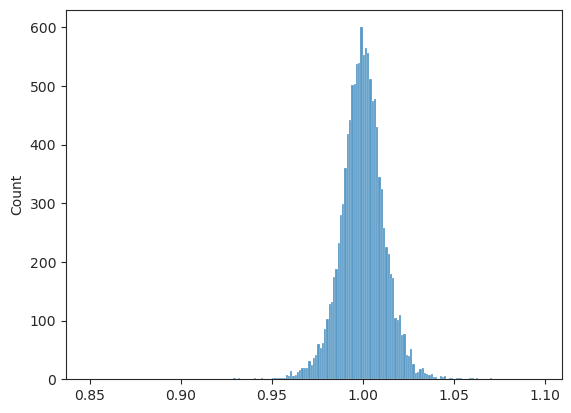
len(vae.all_log_norm)
225
tr.cfg.warmup_portion
0.01
vae.cfg.residual_kl
True
tr.optim
Adamax (
Parameter Group 0
betas: (0.9, 0.999)
differentiable: False
eps: 0.001
foreach: None
initial_lr: 0.001
lr: 0.001
maximize: False
weight_decay: 0.0001
)
tr.alphas = None
Review train options¶
print(f"VAE:\t\t{vae.cfg.name()}\nTrainer:\t{tr.cfg.name()}")
VAE: k-32_z-3x[5,10,20]_cells-2_post-1x3 Trainer: ep1000-b512-lr(0.001)_beta(0.25)-anneal(1x0.3)_lambda(1)_grad(2000)
Train¶
comment = f"kl:NoBal-eps:1e-3_warmup:0.01_{tr.cfg.name()}"
tr.train(comment=comment)
epoch # 259, avg loss: 17.086719: 26%|██▌ | 259/1000 [4:46:37<12:46:04, 62.03s/it]
# comment = f"NoSpectNorm-BugFix(equi:KABA-cuda1)-Cell:skip+x-Clip300_{tr.cfg.name()}"
# tr.train(comment=comment)
epoch # 1000, avg loss: 13.989520: 100%|██████████| 1000/1000 [17:34:15<00:00, 63.26s/it]
# before: epoch # 1000, avg loss: 12.994576
all_norm = [torch.exp(n.ravel()) for n in vae.all_log_norm]
all_norm = to_np(torch.cat(all_norm))
sns.histplot(all_norm, bins=np.linspace(0.5, 1.5, 101));
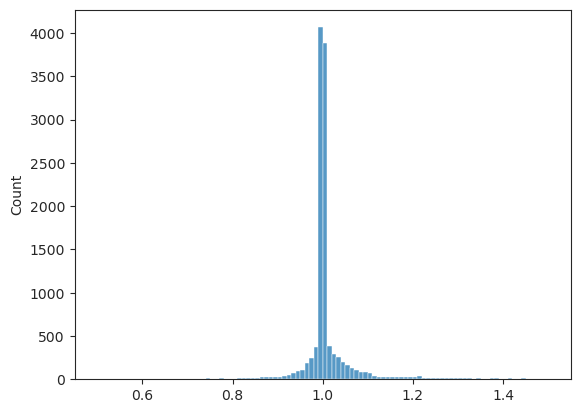
np.max(all_norm), 100 * (all_norm > 1.5).sum() / len(all_norm), 100 * (all_norm < 0.5).sum() / len(all_norm)
(6.342939, 2.0474137931034484, 0.0)
from model.vae2d import *
norms = collections.defaultdict(list)
norms['stem'] = list(to_np(vae.stem.log_weight_norm.exp()))
for cell in vae.enc_tower:
for m in cell.modules():
if hasattr(m, 'log_weight_norm'):
norms[f"{type(cell).__name__}_enc"].extend(
list(to_np(m.log_weight_norm.exp())))
for cell in vae.dec_tower:
for m in cell.modules():
if hasattr(m, 'log_weight_norm'):
norms[f"{type(cell).__name__}_dec"].extend(
list(to_np(m.log_weight_norm.exp())))
for cell in vae.enc_sampler:
for m in cell.modules():
if hasattr(m, 'log_weight_norm'):
norms['enc_sampler'].extend(
list(to_np(m.log_weight_norm.exp())))
for cell in vae.dec_sampler:
for m in cell.modules():
if hasattr(m, 'log_weight_norm'):
norms['dec_sampler'].extend(
list(to_np(m.log_weight_norm.exp())))
for cell in vae.expand:
for m in cell.modules():
if hasattr(m, 'log_weight_norm'):
norms['expand'].extend(
list(to_np(m.log_weight_norm.exp())))
for cell in vae.post:
for m in cell.modules():
if hasattr(m, 'log_weight_norm'):
norms[f"{type(cell).__name__}_post"].extend(
list(to_np(m.log_weight_norm.exp())))
norms = dict(sorted(norms.items()))
fig, axes = create_figure(2, 4, (9, 5), constrained_layout=True)
for i, (k, v) in enumerate(norms.items()):
ax = axes.flat[i]
ax.axvline(1, color='k', ls='--', lw=1.0, zorder=0)
sns.histplot(v, color=f"C{i}", bins=np.linspace(0, 5, 101), label=k, ax=ax)
title = f"max: {np.max(v):0.1f}\n{100 * (np.array(v) > 5).sum() / len(v):0.1f} % are > 5"
ax.set_title(title, fontsize=10)
ax.set_ylabel('')
ax.legend()
plt.show()
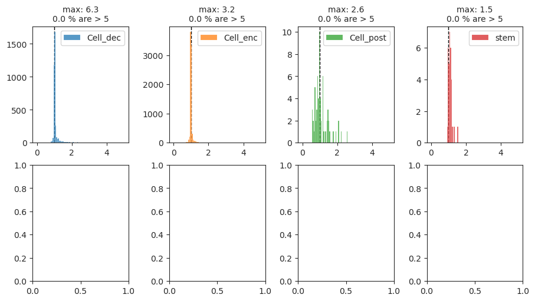
val, loss = tr.validate(n_samples=4096)
{k: v.mean() for k, v in loss.items()}
{'kl': 39.5488,
'l1': 0.5251577,
'l2': 0.19717647,
'epe': 2.219914,
'cos': 3.7904382}
print(f"VAE:\t\t{vae.cfg.name()}\nTrainer:\t{tr.cfg.name()}")
vae.cfg.name()
'k-32_z-3x[5,10,20]_cells-2_post-1x3_sn-1'
for k, v in val.items():
if 'fig' in k:
print(k)
display(v)
fig/sample
fig/corr_z
fig/regression
fig/mutual_info
fig/hist_z
fig/hist_x_sample
vae.enc_tower[51].ops[1].conv.log_weight_norm.exp()
tensor([0.7456, 0.7770, 0.7388, 0.6777, 0.8480, 0.7801, 0.6696, 0.8134, 0.7437,
0.7375, 0.7078, 0.7894, 0.6656, 0.7543, 0.7170, 0.6750, 0.7204, 0.7756,
0.7485, 0.7165, 0.7159, 0.7198, 0.7240, 0.7700, 0.7824, 0.6420, 0.6514,
0.6990, 0.6744, 0.7830, 0.7067, 0.6656, 0.7208, 0.6960, 0.9064, 0.7239,
0.7183, 0.7239, 0.7136, 0.7120], device='cuda:0',
grad_fn=<ExpBackward0>)
print(vae)
VAE( (stem): ParametrizedConv2d( 2, 40, kernel_size=(4, 4), stride=(1, 1), padding=valid (parametrizations): ModuleDict( (weight): ParametrizationList( (0): _SpectralNorm() ) ) ) (pre): ModuleList() (enc_tower): ModuleList( (0-1): 2 x Cell( (skip): Identity() (ops): ModuleList( (0-1): 2 x ConvLayer( (act_fn): SiLU() (conv): ParametrizedConv2D( 40, 40, kernel_size=(3, 3), stride=(1, 1), padding=(1, 1) (parametrizations): ModuleDict( (weight): ParametrizationList( (0): _SpectralNorm() ) ) ) ) ) (se): SELayer( (pool): AdaptiveAvgPool2d(output_size=1) (fc): Sequential( (0): Linear(in_features=40, out_features=4, bias=True) (1): SiLU() (2): Linear(in_features=4, out_features=40, bias=True) (3): Sigmoid() ) ) ) (2): CombinerEnc( (conv): ParametrizedConv2d( 40, 40, kernel_size=(1, 1), stride=(1, 1) (parametrizations): ModuleDict( (weight): ParametrizationList( (0): _SpectralNorm() ) ) ) ) (3-4): 2 x Cell( (skip): Identity() (ops): ModuleList( (0-1): 2 x ConvLayer( (act_fn): SiLU() (conv): ParametrizedConv2D( 40, 40, kernel_size=(3, 3), stride=(1, 1), padding=(1, 1) (parametrizations): ModuleDict( (weight): ParametrizationList( (0): _SpectralNorm() ) ) ) ) ) (se): SELayer( (pool): AdaptiveAvgPool2d(output_size=1) (fc): Sequential( (0): Linear(in_features=40, out_features=4, bias=True) (1): SiLU() (2): Linear(in_features=4, out_features=40, bias=True) (3): Sigmoid() ) ) ) (5): CombinerEnc( (conv): ParametrizedConv2d( 40, 40, kernel_size=(1, 1), stride=(1, 1) (parametrizations): ModuleDict( (weight): ParametrizationList( (0): _SpectralNorm() ) ) ) ) (6-7): 2 x Cell( (skip): Identity() (ops): ModuleList( (0-1): 2 x ConvLayer( (act_fn): SiLU() (conv): ParametrizedConv2D( 40, 40, kernel_size=(3, 3), stride=(1, 1), padding=(1, 1) (parametrizations): ModuleDict( (weight): ParametrizationList( (0): _SpectralNorm() ) ) ) ) ) (se): SELayer( (pool): AdaptiveAvgPool2d(output_size=1) (fc): Sequential( (0): Linear(in_features=40, out_features=4, bias=True) (1): SiLU() (2): Linear(in_features=4, out_features=40, bias=True) (3): Sigmoid() ) ) ) (8): CombinerEnc( (conv): ParametrizedConv2d( 40, 40, kernel_size=(1, 1), stride=(1, 1) (parametrizations): ModuleDict( (weight): ParametrizationList( (0): _SpectralNorm() ) ) ) ) (9-10): 2 x Cell( (skip): Identity() (ops): ModuleList( (0-1): 2 x ConvLayer( (act_fn): SiLU() (conv): ParametrizedConv2D( 40, 40, kernel_size=(3, 3), stride=(1, 1), padding=(1, 1) (parametrizations): ModuleDict( (weight): ParametrizationList( (0): _SpectralNorm() ) ) ) ) ) (se): SELayer( (pool): AdaptiveAvgPool2d(output_size=1) (fc): Sequential( (0): Linear(in_features=40, out_features=4, bias=True) (1): SiLU() (2): Linear(in_features=4, out_features=40, bias=True) (3): Sigmoid() ) ) ) (11): CombinerEnc( (conv): ParametrizedConv2d( 40, 40, kernel_size=(1, 1), stride=(1, 1) (parametrizations): ModuleDict( (weight): ParametrizationList( (0): _SpectralNorm() ) ) ) ) (12-13): 2 x Cell( (skip): Identity() (ops): ModuleList( (0-1): 2 x ConvLayer( (act_fn): SiLU() (conv): ParametrizedConv2D( 40, 40, kernel_size=(3, 3), stride=(1, 1), padding=(1, 1) (parametrizations): ModuleDict( (weight): ParametrizationList( (0): _SpectralNorm() ) ) ) ) ) (se): SELayer( (pool): AdaptiveAvgPool2d(output_size=1) (fc): Sequential( (0): Linear(in_features=40, out_features=4, bias=True) (1): SiLU() (2): Linear(in_features=4, out_features=40, bias=True) (3): Sigmoid() ) ) ) (14): CombinerEnc( (conv): ParametrizedConv2d( 40, 40, kernel_size=(1, 1), stride=(1, 1) (parametrizations): ModuleDict( (weight): ParametrizationList( (0): _SpectralNorm() ) ) ) ) (15-16): 2 x Cell( (skip): Identity() (ops): ModuleList( (0-1): 2 x ConvLayer( (act_fn): SiLU() (conv): ParametrizedConv2D( 40, 40, kernel_size=(3, 3), stride=(1, 1), padding=(1, 1) (parametrizations): ModuleDict( (weight): ParametrizationList( (0): _SpectralNorm() ) ) ) ) ) (se): SELayer( (pool): AdaptiveAvgPool2d(output_size=1) (fc): Sequential( (0): Linear(in_features=40, out_features=4, bias=True) (1): SiLU() (2): Linear(in_features=4, out_features=40, bias=True) (3): Sigmoid() ) ) ) (17): CombinerEnc( (conv): ParametrizedConv2d( 40, 40, kernel_size=(1, 1), stride=(1, 1) (parametrizations): ModuleDict( (weight): ParametrizationList( (0): _SpectralNorm() ) ) ) ) (18-19): 2 x Cell( (skip): Identity() (ops): ModuleList( (0-1): 2 x ConvLayer( (act_fn): SiLU() (conv): ParametrizedConv2D( 40, 40, kernel_size=(3, 3), stride=(1, 1), padding=(1, 1) (parametrizations): ModuleDict( (weight): ParametrizationList( (0): _SpectralNorm() ) ) ) ) ) (se): SELayer( (pool): AdaptiveAvgPool2d(output_size=1) (fc): Sequential( (0): Linear(in_features=40, out_features=4, bias=True) (1): SiLU() (2): Linear(in_features=4, out_features=40, bias=True) (3): Sigmoid() ) ) ) (20): CombinerEnc( (conv): ParametrizedConv2d( 40, 40, kernel_size=(1, 1), stride=(1, 1) (parametrizations): ModuleDict( (weight): ParametrizationList( (0): _SpectralNorm() ) ) ) ) (21-22): 2 x Cell( (skip): Identity() (ops): ModuleList( (0-1): 2 x ConvLayer( (act_fn): SiLU() (conv): ParametrizedConv2D( 40, 40, kernel_size=(3, 3), stride=(1, 1), padding=(1, 1) (parametrizations): ModuleDict( (weight): ParametrizationList( (0): _SpectralNorm() ) ) ) ) ) (se): SELayer( (pool): AdaptiveAvgPool2d(output_size=1) (fc): Sequential( (0): Linear(in_features=40, out_features=4, bias=True) (1): SiLU() (2): Linear(in_features=4, out_features=40, bias=True) (3): Sigmoid() ) ) ) (23): CombinerEnc( (conv): ParametrizedConv2d( 40, 40, kernel_size=(1, 1), stride=(1, 1) (parametrizations): ModuleDict( (weight): ParametrizationList( (0): _SpectralNorm() ) ) ) ) (24-25): 2 x Cell( (skip): Identity() (ops): ModuleList( (0-1): 2 x ConvLayer( (act_fn): SiLU() (conv): ParametrizedConv2D( 40, 40, kernel_size=(3, 3), stride=(1, 1), padding=(1, 1) (parametrizations): ModuleDict( (weight): ParametrizationList( (0): _SpectralNorm() ) ) ) ) ) (se): SELayer( (pool): AdaptiveAvgPool2d(output_size=1) (fc): Sequential( (0): Linear(in_features=40, out_features=4, bias=True) (1): SiLU() (2): Linear(in_features=4, out_features=40, bias=True) (3): Sigmoid() ) ) ) (26): CombinerEnc( (conv): ParametrizedConv2d( 40, 40, kernel_size=(1, 1), stride=(1, 1) (parametrizations): ModuleDict( (weight): ParametrizationList( (0): _SpectralNorm() ) ) ) ) (27-28): 2 x Cell( (skip): Identity() (ops): ModuleList( (0-1): 2 x ConvLayer( (act_fn): SiLU() (conv): ParametrizedConv2D( 40, 40, kernel_size=(3, 3), stride=(1, 1), padding=(1, 1) (parametrizations): ModuleDict( (weight): ParametrizationList( (0): _SpectralNorm() ) ) ) ) ) (se): SELayer( (pool): AdaptiveAvgPool2d(output_size=1) (fc): Sequential( (0): Linear(in_features=40, out_features=4, bias=True) (1): SiLU() (2): Linear(in_features=4, out_features=40, bias=True) (3): Sigmoid() ) ) ) (29): CombinerEnc( (conv): ParametrizedConv2d( 40, 40, kernel_size=(1, 1), stride=(1, 1) (parametrizations): ModuleDict( (weight): ParametrizationList( (0): _SpectralNorm() ) ) ) ) (30-31): 2 x Cell( (skip): Identity() (ops): ModuleList( (0-1): 2 x ConvLayer( (act_fn): SiLU() (conv): ParametrizedConv2D( 40, 40, kernel_size=(3, 3), stride=(1, 1), padding=(1, 1) (parametrizations): ModuleDict( (weight): ParametrizationList( (0): _SpectralNorm() ) ) ) ) ) (se): SELayer( (pool): AdaptiveAvgPool2d(output_size=1) (fc): Sequential( (0): Linear(in_features=40, out_features=4, bias=True) (1): SiLU() (2): Linear(in_features=4, out_features=40, bias=True) (3): Sigmoid() ) ) ) (32): CombinerEnc( (conv): ParametrizedConv2d( 40, 40, kernel_size=(1, 1), stride=(1, 1) (parametrizations): ModuleDict( (weight): ParametrizationList( (0): _SpectralNorm() ) ) ) ) (33-34): 2 x Cell( (skip): Identity() (ops): ModuleList( (0-1): 2 x ConvLayer( (act_fn): SiLU() (conv): ParametrizedConv2D( 40, 40, kernel_size=(3, 3), stride=(1, 1), padding=(1, 1) (parametrizations): ModuleDict( (weight): ParametrizationList( (0): _SpectralNorm() ) ) ) ) ) (se): SELayer( (pool): AdaptiveAvgPool2d(output_size=1) (fc): Sequential( (0): Linear(in_features=40, out_features=4, bias=True) (1): SiLU() (2): Linear(in_features=4, out_features=40, bias=True) (3): Sigmoid() ) ) ) (35): CombinerEnc( (conv): ParametrizedConv2d( 40, 40, kernel_size=(1, 1), stride=(1, 1) (parametrizations): ModuleDict( (weight): ParametrizationList( (0): _SpectralNorm() ) ) ) ) (36-37): 2 x Cell( (skip): Identity() (ops): ModuleList( (0-1): 2 x ConvLayer( (act_fn): SiLU() (conv): ParametrizedConv2D( 40, 40, kernel_size=(3, 3), stride=(1, 1), padding=(1, 1) (parametrizations): ModuleDict( (weight): ParametrizationList( (0): _SpectralNorm() ) ) ) ) ) (se): SELayer( (pool): AdaptiveAvgPool2d(output_size=1) (fc): Sequential( (0): Linear(in_features=40, out_features=4, bias=True) (1): SiLU() (2): Linear(in_features=4, out_features=40, bias=True) (3): Sigmoid() ) ) ) (38): CombinerEnc( (conv): ParametrizedConv2d( 40, 40, kernel_size=(1, 1), stride=(1, 1) (parametrizations): ModuleDict( (weight): ParametrizationList( (0): _SpectralNorm() ) ) ) ) (39-40): 2 x Cell( (skip): Identity() (ops): ModuleList( (0-1): 2 x ConvLayer( (act_fn): SiLU() (conv): ParametrizedConv2D( 40, 40, kernel_size=(3, 3), stride=(1, 1), padding=(1, 1) (parametrizations): ModuleDict( (weight): ParametrizationList( (0): _SpectralNorm() ) ) ) ) ) (se): SELayer( (pool): AdaptiveAvgPool2d(output_size=1) (fc): Sequential( (0): Linear(in_features=40, out_features=4, bias=True) (1): SiLU() (2): Linear(in_features=4, out_features=40, bias=True) (3): Sigmoid() ) ) ) (41): CombinerEnc( (conv): ParametrizedConv2d( 40, 40, kernel_size=(1, 1), stride=(1, 1) (parametrizations): ModuleDict( (weight): ParametrizationList( (0): _SpectralNorm() ) ) ) ) (42-43): 2 x Cell( (skip): Identity() (ops): ModuleList( (0-1): 2 x ConvLayer( (act_fn): SiLU() (conv): ParametrizedConv2D( 40, 40, kernel_size=(3, 3), stride=(1, 1), padding=(1, 1) (parametrizations): ModuleDict( (weight): ParametrizationList( (0): _SpectralNorm() ) ) ) ) ) (se): SELayer( (pool): AdaptiveAvgPool2d(output_size=1) (fc): Sequential( (0): Linear(in_features=40, out_features=4, bias=True) (1): SiLU() (2): Linear(in_features=4, out_features=40, bias=True) (3): Sigmoid() ) ) ) (44): CombinerEnc( (conv): ParametrizedConv2d( 40, 40, kernel_size=(1, 1), stride=(1, 1) (parametrizations): ModuleDict( (weight): ParametrizationList( (0): _SpectralNorm() ) ) ) ) (45-46): 2 x Cell( (skip): Identity() (ops): ModuleList( (0-1): 2 x ConvLayer( (act_fn): SiLU() (conv): ParametrizedConv2D( 40, 40, kernel_size=(3, 3), stride=(1, 1), padding=(1, 1) (parametrizations): ModuleDict( (weight): ParametrizationList( (0): _SpectralNorm() ) ) ) ) ) (se): SELayer( (pool): AdaptiveAvgPool2d(output_size=1) (fc): Sequential( (0): Linear(in_features=40, out_features=4, bias=True) (1): SiLU() (2): Linear(in_features=4, out_features=40, bias=True) (3): Sigmoid() ) ) ) (47): CombinerEnc( (conv): ParametrizedConv2d( 40, 40, kernel_size=(1, 1), stride=(1, 1) (parametrizations): ModuleDict( (weight): ParametrizationList( (0): _SpectralNorm() ) ) ) ) (48-49): 2 x Cell( (skip): Identity() (ops): ModuleList( (0-1): 2 x ConvLayer( (act_fn): SiLU() (conv): ParametrizedConv2D( 40, 40, kernel_size=(3, 3), stride=(1, 1), padding=(1, 1) (parametrizations): ModuleDict( (weight): ParametrizationList( (0): _SpectralNorm() ) ) ) ) ) (se): SELayer( (pool): AdaptiveAvgPool2d(output_size=1) (fc): Sequential( (0): Linear(in_features=40, out_features=4, bias=True) (1): SiLU() (2): Linear(in_features=4, out_features=40, bias=True) (3): Sigmoid() ) ) ) (50): CombinerEnc( (conv): ParametrizedConv2d( 40, 40, kernel_size=(1, 1), stride=(1, 1) (parametrizations): ModuleDict( (weight): ParametrizationList( (0): _SpectralNorm() ) ) ) ) (51-52): 2 x Cell( (skip): Identity() (ops): ModuleList( (0-1): 2 x ConvLayer( (act_fn): SiLU() (conv): ParametrizedConv2D( 40, 40, kernel_size=(3, 3), stride=(1, 1), padding=(1, 1) (parametrizations): ModuleDict( (weight): ParametrizationList( (0): _SpectralNorm() ) ) ) ) ) (se): SELayer( (pool): AdaptiveAvgPool2d(output_size=1) (fc): Sequential( (0): Linear(in_features=40, out_features=4, bias=True) (1): SiLU() (2): Linear(in_features=4, out_features=40, bias=True) (3): Sigmoid() ) ) ) (53): CombinerEnc( (conv): ParametrizedConv2d( 40, 40, kernel_size=(1, 1), stride=(1, 1) (parametrizations): ModuleDict( (weight): ParametrizationList( (0): _SpectralNorm() ) ) ) ) (54-55): 2 x Cell( (skip): Identity() (ops): ModuleList( (0-1): 2 x ConvLayer( (act_fn): SiLU() (conv): ParametrizedConv2D( 40, 40, kernel_size=(3, 3), stride=(1, 1), padding=(1, 1) (parametrizations): ModuleDict( (weight): ParametrizationList( (0): _SpectralNorm() ) ) ) ) ) (se): SELayer( (pool): AdaptiveAvgPool2d(output_size=1) (fc): Sequential( (0): Linear(in_features=40, out_features=4, bias=True) (1): SiLU() (2): Linear(in_features=4, out_features=40, bias=True) (3): Sigmoid() ) ) ) (56): CombinerEnc( (conv): ParametrizedConv2d( 40, 40, kernel_size=(1, 1), stride=(1, 1) (parametrizations): ModuleDict( (weight): ParametrizationList( (0): _SpectralNorm() ) ) ) ) (57-58): 2 x Cell( (skip): Identity() (ops): ModuleList( (0-1): 2 x ConvLayer( (act_fn): SiLU() (conv): ParametrizedConv2D( 40, 40, kernel_size=(3, 3), stride=(1, 1), padding=(1, 1) (parametrizations): ModuleDict( (weight): ParametrizationList( (0): _SpectralNorm() ) ) ) ) ) (se): SELayer( (pool): AdaptiveAvgPool2d(output_size=1) (fc): Sequential( (0): Linear(in_features=40, out_features=4, bias=True) (1): SiLU() (2): Linear(in_features=4, out_features=40, bias=True) (3): Sigmoid() ) ) ) (59): CombinerEnc( (conv): ParametrizedConv2d( 40, 40, kernel_size=(1, 1), stride=(1, 1) (parametrizations): ModuleDict( (weight): ParametrizationList( (0): _SpectralNorm() ) ) ) ) (60): Cell( (skip): FactorizedReduce( (swish): SiLU(inplace=True) (ops): ModuleList( (0-3): 4 x ParametrizedConv2D( 40, 20, kernel_size=(1, 1), stride=(2, 2) (parametrizations): ModuleDict( (weight): ParametrizationList( (0): _SpectralNorm() ) ) ) ) ) (ops): ModuleList( (0): ConvLayer( (act_fn): SiLU() (conv): ParametrizedConv2D( 40, 80, kernel_size=(3, 3), stride=(2, 2), padding=(1, 1) (parametrizations): ModuleDict( (weight): ParametrizationList( (0): _SpectralNorm() ) ) ) ) (1): ConvLayer( (act_fn): SiLU() (conv): ParametrizedConv2D( 80, 80, kernel_size=(3, 3), stride=(1, 1), padding=(1, 1) (parametrizations): ModuleDict( (weight): ParametrizationList( (0): _SpectralNorm() ) ) ) ) ) (se): SELayer( (pool): AdaptiveAvgPool2d(output_size=1) (fc): Sequential( (0): Linear(in_features=80, out_features=5, bias=True) (1): SiLU() (2): Linear(in_features=5, out_features=80, bias=True) (3): Sigmoid() ) ) ) (61-62): 2 x Cell( (skip): Identity() (ops): ModuleList( (0-1): 2 x ConvLayer( (act_fn): SiLU() (conv): ParametrizedConv2D( 80, 80, kernel_size=(3, 3), stride=(1, 1), padding=(1, 1) (parametrizations): ModuleDict( (weight): ParametrizationList( (0): _SpectralNorm() ) ) ) ) ) (se): SELayer( (pool): AdaptiveAvgPool2d(output_size=1) (fc): Sequential( (0): Linear(in_features=80, out_features=5, bias=True) (1): SiLU() (2): Linear(in_features=5, out_features=80, bias=True) (3): Sigmoid() ) ) ) (63): CombinerEnc( (conv): ParametrizedConv2d( 80, 80, kernel_size=(1, 1), stride=(1, 1) (parametrizations): ModuleDict( (weight): ParametrizationList( (0): _SpectralNorm() ) ) ) ) (64-65): 2 x Cell( (skip): Identity() (ops): ModuleList( (0-1): 2 x ConvLayer( (act_fn): SiLU() (conv): ParametrizedConv2D( 80, 80, kernel_size=(3, 3), stride=(1, 1), padding=(1, 1) (parametrizations): ModuleDict( (weight): ParametrizationList( (0): _SpectralNorm() ) ) ) ) ) (se): SELayer( (pool): AdaptiveAvgPool2d(output_size=1) (fc): Sequential( (0): Linear(in_features=80, out_features=5, bias=True) (1): SiLU() (2): Linear(in_features=5, out_features=80, bias=True) (3): Sigmoid() ) ) ) (66): CombinerEnc( (conv): ParametrizedConv2d( 80, 80, kernel_size=(1, 1), stride=(1, 1) (parametrizations): ModuleDict( (weight): ParametrizationList( (0): _SpectralNorm() ) ) ) ) (67-68): 2 x Cell( (skip): Identity() (ops): ModuleList( (0-1): 2 x ConvLayer( (act_fn): SiLU() (conv): ParametrizedConv2D( 80, 80, kernel_size=(3, 3), stride=(1, 1), padding=(1, 1) (parametrizations): ModuleDict( (weight): ParametrizationList( (0): _SpectralNorm() ) ) ) ) ) (se): SELayer( (pool): AdaptiveAvgPool2d(output_size=1) (fc): Sequential( (0): Linear(in_features=80, out_features=5, bias=True) (1): SiLU() (2): Linear(in_features=5, out_features=80, bias=True) (3): Sigmoid() ) ) ) (69): CombinerEnc( (conv): ParametrizedConv2d( 80, 80, kernel_size=(1, 1), stride=(1, 1) (parametrizations): ModuleDict( (weight): ParametrizationList( (0): _SpectralNorm() ) ) ) ) (70-71): 2 x Cell( (skip): Identity() (ops): ModuleList( (0-1): 2 x ConvLayer( (act_fn): SiLU() (conv): ParametrizedConv2D( 80, 80, kernel_size=(3, 3), stride=(1, 1), padding=(1, 1) (parametrizations): ModuleDict( (weight): ParametrizationList( (0): _SpectralNorm() ) ) ) ) ) (se): SELayer( (pool): AdaptiveAvgPool2d(output_size=1) (fc): Sequential( (0): Linear(in_features=80, out_features=5, bias=True) (1): SiLU() (2): Linear(in_features=5, out_features=80, bias=True) (3): Sigmoid() ) ) ) (72): CombinerEnc( (conv): ParametrizedConv2d( 80, 80, kernel_size=(1, 1), stride=(1, 1) (parametrizations): ModuleDict( (weight): ParametrizationList( (0): _SpectralNorm() ) ) ) ) (73-74): 2 x Cell( (skip): Identity() (ops): ModuleList( (0-1): 2 x ConvLayer( (act_fn): SiLU() (conv): ParametrizedConv2D( 80, 80, kernel_size=(3, 3), stride=(1, 1), padding=(1, 1) (parametrizations): ModuleDict( (weight): ParametrizationList( (0): _SpectralNorm() ) ) ) ) ) (se): SELayer( (pool): AdaptiveAvgPool2d(output_size=1) (fc): Sequential( (0): Linear(in_features=80, out_features=5, bias=True) (1): SiLU() (2): Linear(in_features=5, out_features=80, bias=True) (3): Sigmoid() ) ) ) (75): CombinerEnc( (conv): ParametrizedConv2d( 80, 80, kernel_size=(1, 1), stride=(1, 1) (parametrizations): ModuleDict( (weight): ParametrizationList( (0): _SpectralNorm() ) ) ) ) (76-77): 2 x Cell( (skip): Identity() (ops): ModuleList( (0-1): 2 x ConvLayer( (act_fn): SiLU() (conv): ParametrizedConv2D( 80, 80, kernel_size=(3, 3), stride=(1, 1), padding=(1, 1) (parametrizations): ModuleDict( (weight): ParametrizationList( (0): _SpectralNorm() ) ) ) ) ) (se): SELayer( (pool): AdaptiveAvgPool2d(output_size=1) (fc): Sequential( (0): Linear(in_features=80, out_features=5, bias=True) (1): SiLU() (2): Linear(in_features=5, out_features=80, bias=True) (3): Sigmoid() ) ) ) (78): CombinerEnc( (conv): ParametrizedConv2d( 80, 80, kernel_size=(1, 1), stride=(1, 1) (parametrizations): ModuleDict( (weight): ParametrizationList( (0): _SpectralNorm() ) ) ) ) (79-80): 2 x Cell( (skip): Identity() (ops): ModuleList( (0-1): 2 x ConvLayer( (act_fn): SiLU() (conv): ParametrizedConv2D( 80, 80, kernel_size=(3, 3), stride=(1, 1), padding=(1, 1) (parametrizations): ModuleDict( (weight): ParametrizationList( (0): _SpectralNorm() ) ) ) ) ) (se): SELayer( (pool): AdaptiveAvgPool2d(output_size=1) (fc): Sequential( (0): Linear(in_features=80, out_features=5, bias=True) (1): SiLU() (2): Linear(in_features=5, out_features=80, bias=True) (3): Sigmoid() ) ) ) (81): CombinerEnc( (conv): ParametrizedConv2d( 80, 80, kernel_size=(1, 1), stride=(1, 1) (parametrizations): ModuleDict( (weight): ParametrizationList( (0): _SpectralNorm() ) ) ) ) (82-83): 2 x Cell( (skip): Identity() (ops): ModuleList( (0-1): 2 x ConvLayer( (act_fn): SiLU() (conv): ParametrizedConv2D( 80, 80, kernel_size=(3, 3), stride=(1, 1), padding=(1, 1) (parametrizations): ModuleDict( (weight): ParametrizationList( (0): _SpectralNorm() ) ) ) ) ) (se): SELayer( (pool): AdaptiveAvgPool2d(output_size=1) (fc): Sequential( (0): Linear(in_features=80, out_features=5, bias=True) (1): SiLU() (2): Linear(in_features=5, out_features=80, bias=True) (3): Sigmoid() ) ) ) (84): CombinerEnc( (conv): ParametrizedConv2d( 80, 80, kernel_size=(1, 1), stride=(1, 1) (parametrizations): ModuleDict( (weight): ParametrizationList( (0): _SpectralNorm() ) ) ) ) (85-86): 2 x Cell( (skip): Identity() (ops): ModuleList( (0-1): 2 x ConvLayer( (act_fn): SiLU() (conv): ParametrizedConv2D( 80, 80, kernel_size=(3, 3), stride=(1, 1), padding=(1, 1) (parametrizations): ModuleDict( (weight): ParametrizationList( (0): _SpectralNorm() ) ) ) ) ) (se): SELayer( (pool): AdaptiveAvgPool2d(output_size=1) (fc): Sequential( (0): Linear(in_features=80, out_features=5, bias=True) (1): SiLU() (2): Linear(in_features=5, out_features=80, bias=True) (3): Sigmoid() ) ) ) (87): CombinerEnc( (conv): ParametrizedConv2d( 80, 80, kernel_size=(1, 1), stride=(1, 1) (parametrizations): ModuleDict( (weight): ParametrizationList( (0): _SpectralNorm() ) ) ) ) (88-89): 2 x Cell( (skip): Identity() (ops): ModuleList( (0-1): 2 x ConvLayer( (act_fn): SiLU() (conv): ParametrizedConv2D( 80, 80, kernel_size=(3, 3), stride=(1, 1), padding=(1, 1) (parametrizations): ModuleDict( (weight): ParametrizationList( (0): _SpectralNorm() ) ) ) ) ) (se): SELayer( (pool): AdaptiveAvgPool2d(output_size=1) (fc): Sequential( (0): Linear(in_features=80, out_features=5, bias=True) (1): SiLU() (2): Linear(in_features=5, out_features=80, bias=True) (3): Sigmoid() ) ) ) (90): CombinerEnc( (conv): ParametrizedConv2d( 80, 80, kernel_size=(1, 1), stride=(1, 1) (parametrizations): ModuleDict( (weight): ParametrizationList( (0): _SpectralNorm() ) ) ) ) (91): Cell( (skip): FactorizedReduce( (swish): SiLU(inplace=True) (ops): ModuleList( (0-3): 4 x ParametrizedConv2D( 80, 40, kernel_size=(1, 1), stride=(2, 2) (parametrizations): ModuleDict( (weight): ParametrizationList( (0): _SpectralNorm() ) ) ) ) ) (ops): ModuleList( (0): ConvLayer( (act_fn): SiLU() (conv): ParametrizedConv2D( 80, 160, kernel_size=(3, 3), stride=(2, 2), padding=(1, 1) (parametrizations): ModuleDict( (weight): ParametrizationList( (0): _SpectralNorm() ) ) ) ) (1): ConvLayer( (act_fn): SiLU() (conv): ParametrizedConv2D( 160, 160, kernel_size=(3, 3), stride=(1, 1), padding=(1, 1) (parametrizations): ModuleDict( (weight): ParametrizationList( (0): _SpectralNorm() ) ) ) ) ) (se): SELayer( (pool): AdaptiveAvgPool2d(output_size=1) (fc): Sequential( (0): Linear(in_features=160, out_features=10, bias=True) (1): SiLU() (2): Linear(in_features=10, out_features=160, bias=True) (3): Sigmoid() ) ) ) (92-93): 2 x Cell( (skip): Identity() (ops): ModuleList( (0-1): 2 x ConvLayer( (act_fn): SiLU() (conv): ParametrizedConv2D( 160, 160, kernel_size=(3, 3), stride=(1, 1), padding=(1, 1) (parametrizations): ModuleDict( (weight): ParametrizationList( (0): _SpectralNorm() ) ) ) ) ) (se): SELayer( (pool): AdaptiveAvgPool2d(output_size=1) (fc): Sequential( (0): Linear(in_features=160, out_features=10, bias=True) (1): SiLU() (2): Linear(in_features=10, out_features=160, bias=True) (3): Sigmoid() ) ) ) (94): CombinerEnc( (conv): ParametrizedConv2d( 160, 160, kernel_size=(1, 1), stride=(1, 1) (parametrizations): ModuleDict( (weight): ParametrizationList( (0): _SpectralNorm() ) ) ) ) (95-96): 2 x Cell( (skip): Identity() (ops): ModuleList( (0-1): 2 x ConvLayer( (act_fn): SiLU() (conv): ParametrizedConv2D( 160, 160, kernel_size=(3, 3), stride=(1, 1), padding=(1, 1) (parametrizations): ModuleDict( (weight): ParametrizationList( (0): _SpectralNorm() ) ) ) ) ) (se): SELayer( (pool): AdaptiveAvgPool2d(output_size=1) (fc): Sequential( (0): Linear(in_features=160, out_features=10, bias=True) (1): SiLU() (2): Linear(in_features=10, out_features=160, bias=True) (3): Sigmoid() ) ) ) (97): CombinerEnc( (conv): ParametrizedConv2d( 160, 160, kernel_size=(1, 1), stride=(1, 1) (parametrizations): ModuleDict( (weight): ParametrizationList( (0): _SpectralNorm() ) ) ) ) (98-99): 2 x Cell( (skip): Identity() (ops): ModuleList( (0-1): 2 x ConvLayer( (act_fn): SiLU() (conv): ParametrizedConv2D( 160, 160, kernel_size=(3, 3), stride=(1, 1), padding=(1, 1) (parametrizations): ModuleDict( (weight): ParametrizationList( (0): _SpectralNorm() ) ) ) ) ) (se): SELayer( (pool): AdaptiveAvgPool2d(output_size=1) (fc): Sequential( (0): Linear(in_features=160, out_features=10, bias=True) (1): SiLU() (2): Linear(in_features=10, out_features=160, bias=True) (3): Sigmoid() ) ) ) (100): CombinerEnc( (conv): ParametrizedConv2d( 160, 160, kernel_size=(1, 1), stride=(1, 1) (parametrizations): ModuleDict( (weight): ParametrizationList( (0): _SpectralNorm() ) ) ) ) (101-102): 2 x Cell( (skip): Identity() (ops): ModuleList( (0-1): 2 x ConvLayer( (act_fn): SiLU() (conv): ParametrizedConv2D( 160, 160, kernel_size=(3, 3), stride=(1, 1), padding=(1, 1) (parametrizations): ModuleDict( (weight): ParametrizationList( (0): _SpectralNorm() ) ) ) ) ) (se): SELayer( (pool): AdaptiveAvgPool2d(output_size=1) (fc): Sequential( (0): Linear(in_features=160, out_features=10, bias=True) (1): SiLU() (2): Linear(in_features=10, out_features=160, bias=True) (3): Sigmoid() ) ) ) (103): CombinerEnc( (conv): ParametrizedConv2d( 160, 160, kernel_size=(1, 1), stride=(1, 1) (parametrizations): ModuleDict( (weight): ParametrizationList( (0): _SpectralNorm() ) ) ) ) (104-105): 2 x Cell( (skip): Identity() (ops): ModuleList( (0-1): 2 x ConvLayer( (act_fn): SiLU() (conv): ParametrizedConv2D( 160, 160, kernel_size=(3, 3), stride=(1, 1), padding=(1, 1) (parametrizations): ModuleDict( (weight): ParametrizationList( (0): _SpectralNorm() ) ) ) ) ) (se): SELayer( (pool): AdaptiveAvgPool2d(output_size=1) (fc): Sequential( (0): Linear(in_features=160, out_features=10, bias=True) (1): SiLU() (2): Linear(in_features=10, out_features=160, bias=True) (3): Sigmoid() ) ) ) ) (enc_sampler): ModuleList( (0-4): 5 x ParametrizedConv2d( 160, 6, kernel_size=(4, 4), stride=(1, 1) (parametrizations): ModuleDict( (weight): ParametrizationList( (0): _SpectralNorm() ) ) ) (5-14): 10 x ParametrizedConv2d( 80, 6, kernel_size=(8, 8), stride=(1, 1) (parametrizations): ModuleDict( (weight): ParametrizationList( (0): _SpectralNorm() ) ) ) (15-34): 20 x ParametrizedConv2d( 40, 6, kernel_size=(16, 16), stride=(1, 1) (parametrizations): ModuleDict( (weight): ParametrizationList( (0): _SpectralNorm() ) ) ) ) (dec_sampler): ModuleList( (0-3): 4 x Sequential( (0): ELU(alpha=1.0, inplace=True) (1): ParametrizedConv2d( 160, 6, kernel_size=(4, 4), stride=(1, 1) (parametrizations): ModuleDict( (weight): ParametrizationList( (0): _SpectralNorm() ) ) ) ) (4-13): 10 x Sequential( (0): ELU(alpha=1.0, inplace=True) (1): ParametrizedConv2d( 80, 6, kernel_size=(8, 8), stride=(1, 1) (parametrizations): ModuleDict( (weight): ParametrizationList( (0): _SpectralNorm() ) ) ) ) (14-33): 20 x Sequential( (0): ELU(alpha=1.0, inplace=True) (1): ParametrizedConv2d( 40, 6, kernel_size=(16, 16), stride=(1, 1) (parametrizations): ModuleDict( (weight): ParametrizationList( (0): _SpectralNorm() ) ) ) ) ) (expand): ModuleList( (0-4): 5 x ParametrizedConvTranspose2d( 3, 3, kernel_size=(4, 4), stride=(1, 1) (parametrizations): ModuleDict( (weight): ParametrizationList( (0): _SpectralNorm() ) ) ) (5-14): 10 x ParametrizedConvTranspose2d( 3, 3, kernel_size=(8, 8), stride=(1, 1) (parametrizations): ModuleDict( (weight): ParametrizationList( (0): _SpectralNorm() ) ) ) (15-34): 20 x ParametrizedConvTranspose2d( 3, 3, kernel_size=(16, 16), stride=(1, 1) (parametrizations): ModuleDict( (weight): ParametrizationList( (0): _SpectralNorm() ) ) ) ) (dec_tower): ModuleList( (0): CombinerDec( (conv): ParametrizedConv2d( 163, 160, kernel_size=(1, 1), stride=(1, 1) (parametrizations): ModuleDict( (weight): ParametrizationList( (0): _SpectralNorm() ) ) ) ) (1-2): 2 x Cell( (skip): Identity() (ops): ModuleList( (0): ConvLayer( (act_fn): SiLU() (conv): ParametrizedConv2D( 160, 160, kernel_size=(3, 3), stride=(1, 1), padding=(1, 1) (parametrizations): ModuleDict( (weight): ParametrizationList( (0): _SpectralNorm() ) ) ) ) ) (se): SELayer( (pool): AdaptiveAvgPool2d(output_size=1) (fc): Sequential( (0): Linear(in_features=160, out_features=10, bias=True) (1): SiLU() (2): Linear(in_features=10, out_features=160, bias=True) (3): Sigmoid() ) ) ) (3): CombinerDec( (conv): ParametrizedConv2d( 163, 160, kernel_size=(1, 1), stride=(1, 1) (parametrizations): ModuleDict( (weight): ParametrizationList( (0): _SpectralNorm() ) ) ) ) (4-5): 2 x Cell( (skip): Identity() (ops): ModuleList( (0): ConvLayer( (act_fn): SiLU() (conv): ParametrizedConv2D( 160, 160, kernel_size=(3, 3), stride=(1, 1), padding=(1, 1) (parametrizations): ModuleDict( (weight): ParametrizationList( (0): _SpectralNorm() ) ) ) ) ) (se): SELayer( (pool): AdaptiveAvgPool2d(output_size=1) (fc): Sequential( (0): Linear(in_features=160, out_features=10, bias=True) (1): SiLU() (2): Linear(in_features=10, out_features=160, bias=True) (3): Sigmoid() ) ) ) (6): CombinerDec( (conv): ParametrizedConv2d( 163, 160, kernel_size=(1, 1), stride=(1, 1) (parametrizations): ModuleDict( (weight): ParametrizationList( (0): _SpectralNorm() ) ) ) ) (7-8): 2 x Cell( (skip): Identity() (ops): ModuleList( (0): ConvLayer( (act_fn): SiLU() (conv): ParametrizedConv2D( 160, 160, kernel_size=(3, 3), stride=(1, 1), padding=(1, 1) (parametrizations): ModuleDict( (weight): ParametrizationList( (0): _SpectralNorm() ) ) ) ) ) (se): SELayer( (pool): AdaptiveAvgPool2d(output_size=1) (fc): Sequential( (0): Linear(in_features=160, out_features=10, bias=True) (1): SiLU() (2): Linear(in_features=10, out_features=160, bias=True) (3): Sigmoid() ) ) ) (9): CombinerDec( (conv): ParametrizedConv2d( 163, 160, kernel_size=(1, 1), stride=(1, 1) (parametrizations): ModuleDict( (weight): ParametrizationList( (0): _SpectralNorm() ) ) ) ) (10-11): 2 x Cell( (skip): Identity() (ops): ModuleList( (0): ConvLayer( (act_fn): SiLU() (conv): ParametrizedConv2D( 160, 160, kernel_size=(3, 3), stride=(1, 1), padding=(1, 1) (parametrizations): ModuleDict( (weight): ParametrizationList( (0): _SpectralNorm() ) ) ) ) ) (se): SELayer( (pool): AdaptiveAvgPool2d(output_size=1) (fc): Sequential( (0): Linear(in_features=160, out_features=10, bias=True) (1): SiLU() (2): Linear(in_features=10, out_features=160, bias=True) (3): Sigmoid() ) ) ) (12): CombinerDec( (conv): ParametrizedConv2d( 163, 160, kernel_size=(1, 1), stride=(1, 1) (parametrizations): ModuleDict( (weight): ParametrizationList( (0): _SpectralNorm() ) ) ) ) (13): Cell( (skip): Sequential( (0): Upsample(scale_factor=2.0, mode='nearest') (1): ParametrizedConv2D( 160, 80, kernel_size=(1, 1), stride=(1, 1) (parametrizations): ModuleDict( (weight): ParametrizationList( (0): _SpectralNorm() ) ) ) ) (ops): ModuleList( (0): ConvLayer( (upsample): Upsample(scale_factor=2.0, mode='nearest') (act_fn): SiLU() (conv): ParametrizedConv2D( 160, 80, kernel_size=(3, 3), stride=(1, 1), padding=(1, 1) (parametrizations): ModuleDict( (weight): ParametrizationList( (0): _SpectralNorm() ) ) ) ) ) (se): SELayer( (pool): AdaptiveAvgPool2d(output_size=1) (fc): Sequential( (0): Linear(in_features=80, out_features=5, bias=True) (1): SiLU() (2): Linear(in_features=5, out_features=80, bias=True) (3): Sigmoid() ) ) ) (14-15): 2 x Cell( (skip): Identity() (ops): ModuleList( (0): ConvLayer( (act_fn): SiLU() (conv): ParametrizedConv2D( 80, 80, kernel_size=(3, 3), stride=(1, 1), padding=(1, 1) (parametrizations): ModuleDict( (weight): ParametrizationList( (0): _SpectralNorm() ) ) ) ) ) (se): SELayer( (pool): AdaptiveAvgPool2d(output_size=1) (fc): Sequential( (0): Linear(in_features=80, out_features=5, bias=True) (1): SiLU() (2): Linear(in_features=5, out_features=80, bias=True) (3): Sigmoid() ) ) ) (16): CombinerDec( (conv): ParametrizedConv2d( 83, 80, kernel_size=(1, 1), stride=(1, 1) (parametrizations): ModuleDict( (weight): ParametrizationList( (0): _SpectralNorm() ) ) ) ) (17-18): 2 x Cell( (skip): Identity() (ops): ModuleList( (0): ConvLayer( (act_fn): SiLU() (conv): ParametrizedConv2D( 80, 80, kernel_size=(3, 3), stride=(1, 1), padding=(1, 1) (parametrizations): ModuleDict( (weight): ParametrizationList( (0): _SpectralNorm() ) ) ) ) ) (se): SELayer( (pool): AdaptiveAvgPool2d(output_size=1) (fc): Sequential( (0): Linear(in_features=80, out_features=5, bias=True) (1): SiLU() (2): Linear(in_features=5, out_features=80, bias=True) (3): Sigmoid() ) ) ) (19): CombinerDec( (conv): ParametrizedConv2d( 83, 80, kernel_size=(1, 1), stride=(1, 1) (parametrizations): ModuleDict( (weight): ParametrizationList( (0): _SpectralNorm() ) ) ) ) (20-21): 2 x Cell( (skip): Identity() (ops): ModuleList( (0): ConvLayer( (act_fn): SiLU() (conv): ParametrizedConv2D( 80, 80, kernel_size=(3, 3), stride=(1, 1), padding=(1, 1) (parametrizations): ModuleDict( (weight): ParametrizationList( (0): _SpectralNorm() ) ) ) ) ) (se): SELayer( (pool): AdaptiveAvgPool2d(output_size=1) (fc): Sequential( (0): Linear(in_features=80, out_features=5, bias=True) (1): SiLU() (2): Linear(in_features=5, out_features=80, bias=True) (3): Sigmoid() ) ) ) (22): CombinerDec( (conv): ParametrizedConv2d( 83, 80, kernel_size=(1, 1), stride=(1, 1) (parametrizations): ModuleDict( (weight): ParametrizationList( (0): _SpectralNorm() ) ) ) ) (23-24): 2 x Cell( (skip): Identity() (ops): ModuleList( (0): ConvLayer( (act_fn): SiLU() (conv): ParametrizedConv2D( 80, 80, kernel_size=(3, 3), stride=(1, 1), padding=(1, 1) (parametrizations): ModuleDict( (weight): ParametrizationList( (0): _SpectralNorm() ) ) ) ) ) (se): SELayer( (pool): AdaptiveAvgPool2d(output_size=1) (fc): Sequential( (0): Linear(in_features=80, out_features=5, bias=True) (1): SiLU() (2): Linear(in_features=5, out_features=80, bias=True) (3): Sigmoid() ) ) ) (25): CombinerDec( (conv): ParametrizedConv2d( 83, 80, kernel_size=(1, 1), stride=(1, 1) (parametrizations): ModuleDict( (weight): ParametrizationList( (0): _SpectralNorm() ) ) ) ) (26-27): 2 x Cell( (skip): Identity() (ops): ModuleList( (0): ConvLayer( (act_fn): SiLU() (conv): ParametrizedConv2D( 80, 80, kernel_size=(3, 3), stride=(1, 1), padding=(1, 1) (parametrizations): ModuleDict( (weight): ParametrizationList( (0): _SpectralNorm() ) ) ) ) ) (se): SELayer( (pool): AdaptiveAvgPool2d(output_size=1) (fc): Sequential( (0): Linear(in_features=80, out_features=5, bias=True) (1): SiLU() (2): Linear(in_features=5, out_features=80, bias=True) (3): Sigmoid() ) ) ) (28): CombinerDec( (conv): ParametrizedConv2d( 83, 80, kernel_size=(1, 1), stride=(1, 1) (parametrizations): ModuleDict( (weight): ParametrizationList( (0): _SpectralNorm() ) ) ) ) (29-30): 2 x Cell( (skip): Identity() (ops): ModuleList( (0): ConvLayer( (act_fn): SiLU() (conv): ParametrizedConv2D( 80, 80, kernel_size=(3, 3), stride=(1, 1), padding=(1, 1) (parametrizations): ModuleDict( (weight): ParametrizationList( (0): _SpectralNorm() ) ) ) ) ) (se): SELayer( (pool): AdaptiveAvgPool2d(output_size=1) (fc): Sequential( (0): Linear(in_features=80, out_features=5, bias=True) (1): SiLU() (2): Linear(in_features=5, out_features=80, bias=True) (3): Sigmoid() ) ) ) (31): CombinerDec( (conv): ParametrizedConv2d( 83, 80, kernel_size=(1, 1), stride=(1, 1) (parametrizations): ModuleDict( (weight): ParametrizationList( (0): _SpectralNorm() ) ) ) ) (32-33): 2 x Cell( (skip): Identity() (ops): ModuleList( (0): ConvLayer( (act_fn): SiLU() (conv): ParametrizedConv2D( 80, 80, kernel_size=(3, 3), stride=(1, 1), padding=(1, 1) (parametrizations): ModuleDict( (weight): ParametrizationList( (0): _SpectralNorm() ) ) ) ) ) (se): SELayer( (pool): AdaptiveAvgPool2d(output_size=1) (fc): Sequential( (0): Linear(in_features=80, out_features=5, bias=True) (1): SiLU() (2): Linear(in_features=5, out_features=80, bias=True) (3): Sigmoid() ) ) ) (34): CombinerDec( (conv): ParametrizedConv2d( 83, 80, kernel_size=(1, 1), stride=(1, 1) (parametrizations): ModuleDict( (weight): ParametrizationList( (0): _SpectralNorm() ) ) ) ) (35-36): 2 x Cell( (skip): Identity() (ops): ModuleList( (0): ConvLayer( (act_fn): SiLU() (conv): ParametrizedConv2D( 80, 80, kernel_size=(3, 3), stride=(1, 1), padding=(1, 1) (parametrizations): ModuleDict( (weight): ParametrizationList( (0): _SpectralNorm() ) ) ) ) ) (se): SELayer( (pool): AdaptiveAvgPool2d(output_size=1) (fc): Sequential( (0): Linear(in_features=80, out_features=5, bias=True) (1): SiLU() (2): Linear(in_features=5, out_features=80, bias=True) (3): Sigmoid() ) ) ) (37): CombinerDec( (conv): ParametrizedConv2d( 83, 80, kernel_size=(1, 1), stride=(1, 1) (parametrizations): ModuleDict( (weight): ParametrizationList( (0): _SpectralNorm() ) ) ) ) (38-39): 2 x Cell( (skip): Identity() (ops): ModuleList( (0): ConvLayer( (act_fn): SiLU() (conv): ParametrizedConv2D( 80, 80, kernel_size=(3, 3), stride=(1, 1), padding=(1, 1) (parametrizations): ModuleDict( (weight): ParametrizationList( (0): _SpectralNorm() ) ) ) ) ) (se): SELayer( (pool): AdaptiveAvgPool2d(output_size=1) (fc): Sequential( (0): Linear(in_features=80, out_features=5, bias=True) (1): SiLU() (2): Linear(in_features=5, out_features=80, bias=True) (3): Sigmoid() ) ) ) (40): CombinerDec( (conv): ParametrizedConv2d( 83, 80, kernel_size=(1, 1), stride=(1, 1) (parametrizations): ModuleDict( (weight): ParametrizationList( (0): _SpectralNorm() ) ) ) ) (41-42): 2 x Cell( (skip): Identity() (ops): ModuleList( (0): ConvLayer( (act_fn): SiLU() (conv): ParametrizedConv2D( 80, 80, kernel_size=(3, 3), stride=(1, 1), padding=(1, 1) (parametrizations): ModuleDict( (weight): ParametrizationList( (0): _SpectralNorm() ) ) ) ) ) (se): SELayer( (pool): AdaptiveAvgPool2d(output_size=1) (fc): Sequential( (0): Linear(in_features=80, out_features=5, bias=True) (1): SiLU() (2): Linear(in_features=5, out_features=80, bias=True) (3): Sigmoid() ) ) ) (43): CombinerDec( (conv): ParametrizedConv2d( 83, 80, kernel_size=(1, 1), stride=(1, 1) (parametrizations): ModuleDict( (weight): ParametrizationList( (0): _SpectralNorm() ) ) ) ) (44): Cell( (skip): Sequential( (0): Upsample(scale_factor=2.0, mode='nearest') (1): ParametrizedConv2D( 80, 40, kernel_size=(1, 1), stride=(1, 1) (parametrizations): ModuleDict( (weight): ParametrizationList( (0): _SpectralNorm() ) ) ) ) (ops): ModuleList( (0): ConvLayer( (upsample): Upsample(scale_factor=2.0, mode='nearest') (act_fn): SiLU() (conv): ParametrizedConv2D( 80, 40, kernel_size=(3, 3), stride=(1, 1), padding=(1, 1) (parametrizations): ModuleDict( (weight): ParametrizationList( (0): _SpectralNorm() ) ) ) ) ) (se): SELayer( (pool): AdaptiveAvgPool2d(output_size=1) (fc): Sequential( (0): Linear(in_features=40, out_features=4, bias=True) (1): SiLU() (2): Linear(in_features=4, out_features=40, bias=True) (3): Sigmoid() ) ) ) (45-46): 2 x Cell( (skip): Identity() (ops): ModuleList( (0): ConvLayer( (act_fn): SiLU() (conv): ParametrizedConv2D( 40, 40, kernel_size=(3, 3), stride=(1, 1), padding=(1, 1) (parametrizations): ModuleDict( (weight): ParametrizationList( (0): _SpectralNorm() ) ) ) ) ) (se): SELayer( (pool): AdaptiveAvgPool2d(output_size=1) (fc): Sequential( (0): Linear(in_features=40, out_features=4, bias=True) (1): SiLU() (2): Linear(in_features=4, out_features=40, bias=True) (3): Sigmoid() ) ) ) (47): CombinerDec( (conv): ParametrizedConv2d( 43, 40, kernel_size=(1, 1), stride=(1, 1) (parametrizations): ModuleDict( (weight): ParametrizationList( (0): _SpectralNorm() ) ) ) ) (48-49): 2 x Cell( (skip): Identity() (ops): ModuleList( (0): ConvLayer( (act_fn): SiLU() (conv): ParametrizedConv2D( 40, 40, kernel_size=(3, 3), stride=(1, 1), padding=(1, 1) (parametrizations): ModuleDict( (weight): ParametrizationList( (0): _SpectralNorm() ) ) ) ) ) (se): SELayer( (pool): AdaptiveAvgPool2d(output_size=1) (fc): Sequential( (0): Linear(in_features=40, out_features=4, bias=True) (1): SiLU() (2): Linear(in_features=4, out_features=40, bias=True) (3): Sigmoid() ) ) ) (50): CombinerDec( (conv): ParametrizedConv2d( 43, 40, kernel_size=(1, 1), stride=(1, 1) (parametrizations): ModuleDict( (weight): ParametrizationList( (0): _SpectralNorm() ) ) ) ) (51-52): 2 x Cell( (skip): Identity() (ops): ModuleList( (0): ConvLayer( (act_fn): SiLU() (conv): ParametrizedConv2D( 40, 40, kernel_size=(3, 3), stride=(1, 1), padding=(1, 1) (parametrizations): ModuleDict( (weight): ParametrizationList( (0): _SpectralNorm() ) ) ) ) ) (se): SELayer( (pool): AdaptiveAvgPool2d(output_size=1) (fc): Sequential( (0): Linear(in_features=40, out_features=4, bias=True) (1): SiLU() (2): Linear(in_features=4, out_features=40, bias=True) (3): Sigmoid() ) ) ) (53): CombinerDec( (conv): ParametrizedConv2d( 43, 40, kernel_size=(1, 1), stride=(1, 1) (parametrizations): ModuleDict( (weight): ParametrizationList( (0): _SpectralNorm() ) ) ) ) (54-55): 2 x Cell( (skip): Identity() (ops): ModuleList( (0): ConvLayer( (act_fn): SiLU() (conv): ParametrizedConv2D( 40, 40, kernel_size=(3, 3), stride=(1, 1), padding=(1, 1) (parametrizations): ModuleDict( (weight): ParametrizationList( (0): _SpectralNorm() ) ) ) ) ) (se): SELayer( (pool): AdaptiveAvgPool2d(output_size=1) (fc): Sequential( (0): Linear(in_features=40, out_features=4, bias=True) (1): SiLU() (2): Linear(in_features=4, out_features=40, bias=True) (3): Sigmoid() ) ) ) (56): CombinerDec( (conv): ParametrizedConv2d( 43, 40, kernel_size=(1, 1), stride=(1, 1) (parametrizations): ModuleDict( (weight): ParametrizationList( (0): _SpectralNorm() ) ) ) ) (57-58): 2 x Cell( (skip): Identity() (ops): ModuleList( (0): ConvLayer( (act_fn): SiLU() (conv): ParametrizedConv2D( 40, 40, kernel_size=(3, 3), stride=(1, 1), padding=(1, 1) (parametrizations): ModuleDict( (weight): ParametrizationList( (0): _SpectralNorm() ) ) ) ) ) (se): SELayer( (pool): AdaptiveAvgPool2d(output_size=1) (fc): Sequential( (0): Linear(in_features=40, out_features=4, bias=True) (1): SiLU() (2): Linear(in_features=4, out_features=40, bias=True) (3): Sigmoid() ) ) ) (59): CombinerDec( (conv): ParametrizedConv2d( 43, 40, kernel_size=(1, 1), stride=(1, 1) (parametrizations): ModuleDict( (weight): ParametrizationList( (0): _SpectralNorm() ) ) ) ) (60-61): 2 x Cell( (skip): Identity() (ops): ModuleList( (0): ConvLayer( (act_fn): SiLU() (conv): ParametrizedConv2D( 40, 40, kernel_size=(3, 3), stride=(1, 1), padding=(1, 1) (parametrizations): ModuleDict( (weight): ParametrizationList( (0): _SpectralNorm() ) ) ) ) ) (se): SELayer( (pool): AdaptiveAvgPool2d(output_size=1) (fc): Sequential( (0): Linear(in_features=40, out_features=4, bias=True) (1): SiLU() (2): Linear(in_features=4, out_features=40, bias=True) (3): Sigmoid() ) ) ) (62): CombinerDec( (conv): ParametrizedConv2d( 43, 40, kernel_size=(1, 1), stride=(1, 1) (parametrizations): ModuleDict( (weight): ParametrizationList( (0): _SpectralNorm() ) ) ) ) (63-64): 2 x Cell( (skip): Identity() (ops): ModuleList( (0): ConvLayer( (act_fn): SiLU() (conv): ParametrizedConv2D( 40, 40, kernel_size=(3, 3), stride=(1, 1), padding=(1, 1) (parametrizations): ModuleDict( (weight): ParametrizationList( (0): _SpectralNorm() ) ) ) ) ) (se): SELayer( (pool): AdaptiveAvgPool2d(output_size=1) (fc): Sequential( (0): Linear(in_features=40, out_features=4, bias=True) (1): SiLU() (2): Linear(in_features=4, out_features=40, bias=True) (3): Sigmoid() ) ) ) (65): CombinerDec( (conv): ParametrizedConv2d( 43, 40, kernel_size=(1, 1), stride=(1, 1) (parametrizations): ModuleDict( (weight): ParametrizationList( (0): _SpectralNorm() ) ) ) ) (66-67): 2 x Cell( (skip): Identity() (ops): ModuleList( (0): ConvLayer( (act_fn): SiLU() (conv): ParametrizedConv2D( 40, 40, kernel_size=(3, 3), stride=(1, 1), padding=(1, 1) (parametrizations): ModuleDict( (weight): ParametrizationList( (0): _SpectralNorm() ) ) ) ) ) (se): SELayer( (pool): AdaptiveAvgPool2d(output_size=1) (fc): Sequential( (0): Linear(in_features=40, out_features=4, bias=True) (1): SiLU() (2): Linear(in_features=4, out_features=40, bias=True) (3): Sigmoid() ) ) ) (68): CombinerDec( (conv): ParametrizedConv2d( 43, 40, kernel_size=(1, 1), stride=(1, 1) (parametrizations): ModuleDict( (weight): ParametrizationList( (0): _SpectralNorm() ) ) ) ) (69-70): 2 x Cell( (skip): Identity() (ops): ModuleList( (0): ConvLayer( (act_fn): SiLU() (conv): ParametrizedConv2D( 40, 40, kernel_size=(3, 3), stride=(1, 1), padding=(1, 1) (parametrizations): ModuleDict( (weight): ParametrizationList( (0): _SpectralNorm() ) ) ) ) ) (se): SELayer( (pool): AdaptiveAvgPool2d(output_size=1) (fc): Sequential( (0): Linear(in_features=40, out_features=4, bias=True) (1): SiLU() (2): Linear(in_features=4, out_features=40, bias=True) (3): Sigmoid() ) ) ) (71): CombinerDec( (conv): ParametrizedConv2d( 43, 40, kernel_size=(1, 1), stride=(1, 1) (parametrizations): ModuleDict( (weight): ParametrizationList( (0): _SpectralNorm() ) ) ) ) (72-73): 2 x Cell( (skip): Identity() (ops): ModuleList( (0): ConvLayer( (act_fn): SiLU() (conv): ParametrizedConv2D( 40, 40, kernel_size=(3, 3), stride=(1, 1), padding=(1, 1) (parametrizations): ModuleDict( (weight): ParametrizationList( (0): _SpectralNorm() ) ) ) ) ) (se): SELayer( (pool): AdaptiveAvgPool2d(output_size=1) (fc): Sequential( (0): Linear(in_features=40, out_features=4, bias=True) (1): SiLU() (2): Linear(in_features=4, out_features=40, bias=True) (3): Sigmoid() ) ) ) (74): CombinerDec( (conv): ParametrizedConv2d( 43, 40, kernel_size=(1, 1), stride=(1, 1) (parametrizations): ModuleDict( (weight): ParametrizationList( (0): _SpectralNorm() ) ) ) ) (75-76): 2 x Cell( (skip): Identity() (ops): ModuleList( (0): ConvLayer( (act_fn): SiLU() (conv): ParametrizedConv2D( 40, 40, kernel_size=(3, 3), stride=(1, 1), padding=(1, 1) (parametrizations): ModuleDict( (weight): ParametrizationList( (0): _SpectralNorm() ) ) ) ) ) (se): SELayer( (pool): AdaptiveAvgPool2d(output_size=1) (fc): Sequential( (0): Linear(in_features=40, out_features=4, bias=True) (1): SiLU() (2): Linear(in_features=4, out_features=40, bias=True) (3): Sigmoid() ) ) ) (77): CombinerDec( (conv): ParametrizedConv2d( 43, 40, kernel_size=(1, 1), stride=(1, 1) (parametrizations): ModuleDict( (weight): ParametrizationList( (0): _SpectralNorm() ) ) ) ) (78-79): 2 x Cell( (skip): Identity() (ops): ModuleList( (0): ConvLayer( (act_fn): SiLU() (conv): ParametrizedConv2D( 40, 40, kernel_size=(3, 3), stride=(1, 1), padding=(1, 1) (parametrizations): ModuleDict( (weight): ParametrizationList( (0): _SpectralNorm() ) ) ) ) ) (se): SELayer( (pool): AdaptiveAvgPool2d(output_size=1) (fc): Sequential( (0): Linear(in_features=40, out_features=4, bias=True) (1): SiLU() (2): Linear(in_features=4, out_features=40, bias=True) (3): Sigmoid() ) ) ) (80): CombinerDec( (conv): ParametrizedConv2d( 43, 40, kernel_size=(1, 1), stride=(1, 1) (parametrizations): ModuleDict( (weight): ParametrizationList( (0): _SpectralNorm() ) ) ) ) (81-82): 2 x Cell( (skip): Identity() (ops): ModuleList( (0): ConvLayer( (act_fn): SiLU() (conv): ParametrizedConv2D( 40, 40, kernel_size=(3, 3), stride=(1, 1), padding=(1, 1) (parametrizations): ModuleDict( (weight): ParametrizationList( (0): _SpectralNorm() ) ) ) ) ) (se): SELayer( (pool): AdaptiveAvgPool2d(output_size=1) (fc): Sequential( (0): Linear(in_features=40, out_features=4, bias=True) (1): SiLU() (2): Linear(in_features=4, out_features=40, bias=True) (3): Sigmoid() ) ) ) (83): CombinerDec( (conv): ParametrizedConv2d( 43, 40, kernel_size=(1, 1), stride=(1, 1) (parametrizations): ModuleDict( (weight): ParametrizationList( (0): _SpectralNorm() ) ) ) ) (84-85): 2 x Cell( (skip): Identity() (ops): ModuleList( (0): ConvLayer( (act_fn): SiLU() (conv): ParametrizedConv2D( 40, 40, kernel_size=(3, 3), stride=(1, 1), padding=(1, 1) (parametrizations): ModuleDict( (weight): ParametrizationList( (0): _SpectralNorm() ) ) ) ) ) (se): SELayer( (pool): AdaptiveAvgPool2d(output_size=1) (fc): Sequential( (0): Linear(in_features=40, out_features=4, bias=True) (1): SiLU() (2): Linear(in_features=4, out_features=40, bias=True) (3): Sigmoid() ) ) ) (86): CombinerDec( (conv): ParametrizedConv2d( 43, 40, kernel_size=(1, 1), stride=(1, 1) (parametrizations): ModuleDict( (weight): ParametrizationList( (0): _SpectralNorm() ) ) ) ) (87-88): 2 x Cell( (skip): Identity() (ops): ModuleList( (0): ConvLayer( (act_fn): SiLU() (conv): ParametrizedConv2D( 40, 40, kernel_size=(3, 3), stride=(1, 1), padding=(1, 1) (parametrizations): ModuleDict( (weight): ParametrizationList( (0): _SpectralNorm() ) ) ) ) ) (se): SELayer( (pool): AdaptiveAvgPool2d(output_size=1) (fc): Sequential( (0): Linear(in_features=40, out_features=4, bias=True) (1): SiLU() (2): Linear(in_features=4, out_features=40, bias=True) (3): Sigmoid() ) ) ) (89): CombinerDec( (conv): ParametrizedConv2d( 43, 40, kernel_size=(1, 1), stride=(1, 1) (parametrizations): ModuleDict( (weight): ParametrizationList( (0): _SpectralNorm() ) ) ) ) (90-91): 2 x Cell( (skip): Identity() (ops): ModuleList( (0): ConvLayer( (act_fn): SiLU() (conv): ParametrizedConv2D( 40, 40, kernel_size=(3, 3), stride=(1, 1), padding=(1, 1) (parametrizations): ModuleDict( (weight): ParametrizationList( (0): _SpectralNorm() ) ) ) ) ) (se): SELayer( (pool): AdaptiveAvgPool2d(output_size=1) (fc): Sequential( (0): Linear(in_features=40, out_features=4, bias=True) (1): SiLU() (2): Linear(in_features=4, out_features=40, bias=True) (3): Sigmoid() ) ) ) (92): CombinerDec( (conv): ParametrizedConv2d( 43, 40, kernel_size=(1, 1), stride=(1, 1) (parametrizations): ModuleDict( (weight): ParametrizationList( (0): _SpectralNorm() ) ) ) ) (93-94): 2 x Cell( (skip): Identity() (ops): ModuleList( (0): ConvLayer( (act_fn): SiLU() (conv): ParametrizedConv2D( 40, 40, kernel_size=(3, 3), stride=(1, 1), padding=(1, 1) (parametrizations): ModuleDict( (weight): ParametrizationList( (0): _SpectralNorm() ) ) ) ) ) (se): SELayer( (pool): AdaptiveAvgPool2d(output_size=1) (fc): Sequential( (0): Linear(in_features=40, out_features=4, bias=True) (1): SiLU() (2): Linear(in_features=4, out_features=40, bias=True) (3): Sigmoid() ) ) ) (95): CombinerDec( (conv): ParametrizedConv2d( 43, 40, kernel_size=(1, 1), stride=(1, 1) (parametrizations): ModuleDict( (weight): ParametrizationList( (0): _SpectralNorm() ) ) ) ) (96-97): 2 x Cell( (skip): Identity() (ops): ModuleList( (0): ConvLayer( (act_fn): SiLU() (conv): ParametrizedConv2D( 40, 40, kernel_size=(3, 3), stride=(1, 1), padding=(1, 1) (parametrizations): ModuleDict( (weight): ParametrizationList( (0): _SpectralNorm() ) ) ) ) ) (se): SELayer( (pool): AdaptiveAvgPool2d(output_size=1) (fc): Sequential( (0): Linear(in_features=40, out_features=4, bias=True) (1): SiLU() (2): Linear(in_features=4, out_features=40, bias=True) (3): Sigmoid() ) ) ) (98): CombinerDec( (conv): ParametrizedConv2d( 43, 40, kernel_size=(1, 1), stride=(1, 1) (parametrizations): ModuleDict( (weight): ParametrizationList( (0): _SpectralNorm() ) ) ) ) (99-100): 2 x Cell( (skip): Identity() (ops): ModuleList( (0): ConvLayer( (act_fn): SiLU() (conv): ParametrizedConv2D( 40, 40, kernel_size=(3, 3), stride=(1, 1), padding=(1, 1) (parametrizations): ModuleDict( (weight): ParametrizationList( (0): _SpectralNorm() ) ) ) ) ) (se): SELayer( (pool): AdaptiveAvgPool2d(output_size=1) (fc): Sequential( (0): Linear(in_features=40, out_features=4, bias=True) (1): SiLU() (2): Linear(in_features=4, out_features=40, bias=True) (3): Sigmoid() ) ) ) (101): CombinerDec( (conv): ParametrizedConv2d( 43, 40, kernel_size=(1, 1), stride=(1, 1) (parametrizations): ModuleDict( (weight): ParametrizationList( (0): _SpectralNorm() ) ) ) ) (102-103): 2 x Cell( (skip): Identity() (ops): ModuleList( (0): ConvLayer( (act_fn): SiLU() (conv): ParametrizedConv2D( 40, 40, kernel_size=(3, 3), stride=(1, 1), padding=(1, 1) (parametrizations): ModuleDict( (weight): ParametrizationList( (0): _SpectralNorm() ) ) ) ) ) (se): SELayer( (pool): AdaptiveAvgPool2d(output_size=1) (fc): Sequential( (0): Linear(in_features=40, out_features=4, bias=True) (1): SiLU() (2): Linear(in_features=4, out_features=40, bias=True) (3): Sigmoid() ) ) ) (104): CombinerDec( (conv): ParametrizedConv2d( 43, 40, kernel_size=(1, 1), stride=(1, 1) (parametrizations): ModuleDict( (weight): ParametrizationList( (0): _SpectralNorm() ) ) ) ) ) (post): ModuleList( (0): Cell( (skip): Sequential( (0): Upsample(scale_factor=2.0, mode='nearest') (1): ParametrizedConv2D( 40, 20, kernel_size=(1, 1), stride=(1, 1) (parametrizations): ModuleDict( (weight): ParametrizationList( (0): _SpectralNorm() ) ) ) ) (ops): ModuleList( (0): ConvLayer( (upsample): Upsample(scale_factor=2.0, mode='nearest') (act_fn): SiLU() (conv): ParametrizedConv2D( 40, 20, kernel_size=(3, 3), stride=(1, 1), padding=(1, 1) (parametrizations): ModuleDict( (weight): ParametrizationList( (0): _SpectralNorm() ) ) ) ) ) (se): SELayer( (pool): AdaptiveAvgPool2d(output_size=1) (fc): Sequential( (0): Linear(in_features=20, out_features=4, bias=True) (1): SiLU() (2): Linear(in_features=4, out_features=20, bias=True) (3): Sigmoid() ) ) ) (1): Upsample(size=19, mode='nearest') (2-3): 2 x Cell( (skip): Identity() (ops): ModuleList( (0): ConvLayer( (act_fn): SiLU() (conv): ParametrizedConv2D( 20, 20, kernel_size=(3, 3), stride=(1, 1), padding=(1, 1) (parametrizations): ModuleDict( (weight): ParametrizationList( (0): _SpectralNorm() ) ) ) ) ) (se): SELayer( (pool): AdaptiveAvgPool2d(output_size=1) (fc): Sequential( (0): Linear(in_features=20, out_features=4, bias=True) (1): SiLU() (2): Linear(in_features=4, out_features=20, bias=True) (3): Sigmoid() ) ) ) ) (out): ParametrizedConv2d( 20, 2, kernel_size=(3, 3), stride=(1, 1), padding=(1, 1) (parametrizations): ModuleDict( (weight): ParametrizationList( (0): _SpectralNorm() ) ) ) (cos_recon): CosineSimilarity() (l2_recon): MSELoss() (l1_recon): SmoothL1Loss() (l1_weight): SmoothL1Loss() )
vae.enc_tower[0].ops[1]
ConvLayer(
(act_fn): SiLU()
(conv): ParametrizedConv2D(
40, 40, kernel_size=(3, 3), stride=(1, 1), padding=(1, 1)
(parametrizations): ModuleDict(
(weight): ParametrizationList(
(0): _SpectralNorm()
)
)
)
)
len(vae.enc_tower[0].ops)
2
mi = val['regr/mi']
mi.shape
(11, 120)
scales, level_ids = vae.latent_scales()
mi_scales = np.zeros((len(mi), len(level_ids)))
for j, (key, ids) in enumerate(level_ids.items()):
for i, x in enumerate(mi):
mi_scales[i, j] = x[ids].sum() / x.sum()
mi_scales.shape
(11, 40)
names = tr.dl_tst.dataset.factor_names
_ty = [f"{e} ({i:02d})" for i, e in names.items()]
_tx = [e.split('_')[1] for e in level_ids]
show_heatmap(
r=mi_scales,
vmin=0,
vmax=None,
yticklabels=_ty,
xticklabels=_tx,
cmap='magma',
figsize=(50, 7),
);
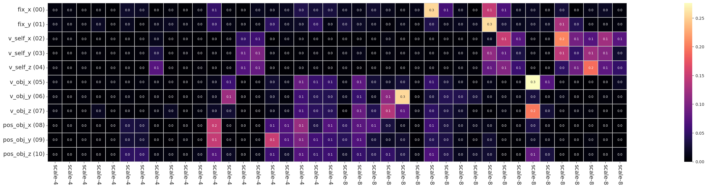
mi_scales2 = np.zeros((len(mi), len(vae.cfg.groups)))
for j, s in enumerate(np.unique(scales)):
_ids = []
for k, ids in level_ids.items():
if f'scale-{s}' in k:
_ids.extend(list(ids))
for i, x in enumerate(mi):
mi_scales2[i, j] = x[_ids].sum() / x.sum()
show_heatmap(
r=mi_scales2,
vmin=0,
vmax=None,
yticklabels=_ty,
xticklabels=np.unique(scales),
cmap='magma',
figsize=(4, 7),
);
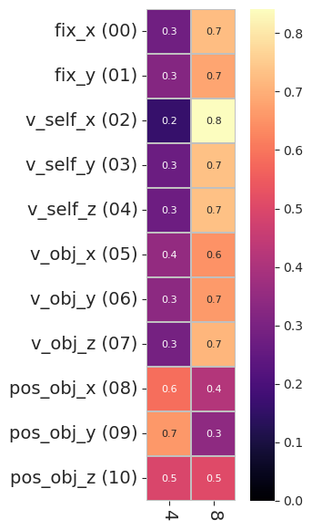
u, s, v = sp_lin.svd(val['z_vld'], full_matrices=False, compute_uv=True)
s *= 100 / s.sum()
u.shape, s.shape, v.shape
((7500, 120), (120,), (120, 120))
plt.plot(np.cumsum(s))
[<matplotlib.lines.Line2D at 0x7f9a4395f700>]
x, norm = next(iter(tr.dl_tst))
x, norm = tr.to([x, norm])
w = 1 / norm
tr.model.eval();
with torch.no_grad():
y, *_ = tr.model(x)
l1 = tr.model.l1_recon(x, y)
l1 = torch.sum(l1, dim=[1, 2, 3])
l1_bal = l1 * w / w.mean()
l1_bal = to_np(l1_bal)
l1 = to_np(l1)
l1.shape
(512,)
np.argmax(l1)
70
np.argmax(l1_bal)
54
i = 54
show_opticflow_full(x[i])
show_opticflow_full(y[i]);
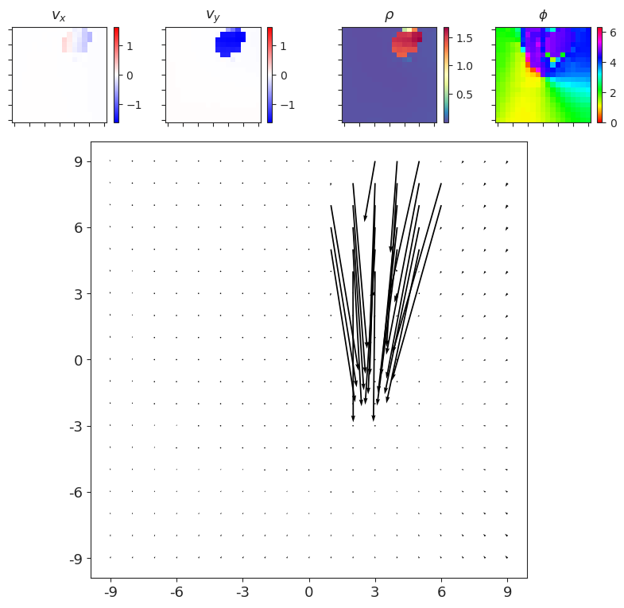
epe = endpoint_error(x, y)
epe_bal = epe * w / w.mean()
epe_bal = to_np(epe_bal)
np.argmax(epe_bal)
417
i = 417
show_opticflow_full(x[i])
show_opticflow_full(y[i]);
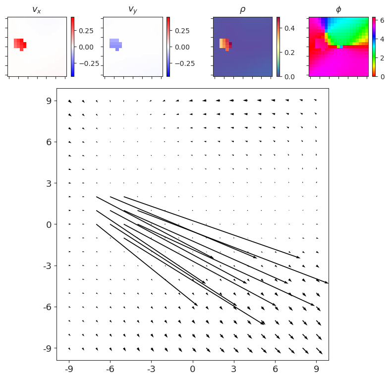
cos = 1 - tr.model.cos_recon(x, y)
cos = torch.sum(cos, dim=[1, 2])
cos = to_np(cos)
plt.plot(cos)
[<matplotlib.lines.Line2D at 0x7fceeea43d00>]
np.argmax(cos)
442
show_opticflow_full(x[442])
show_opticflow_full(y[442]);
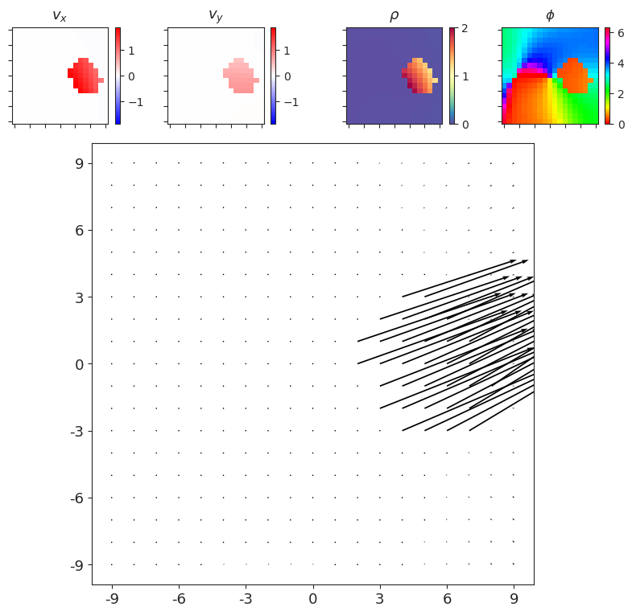
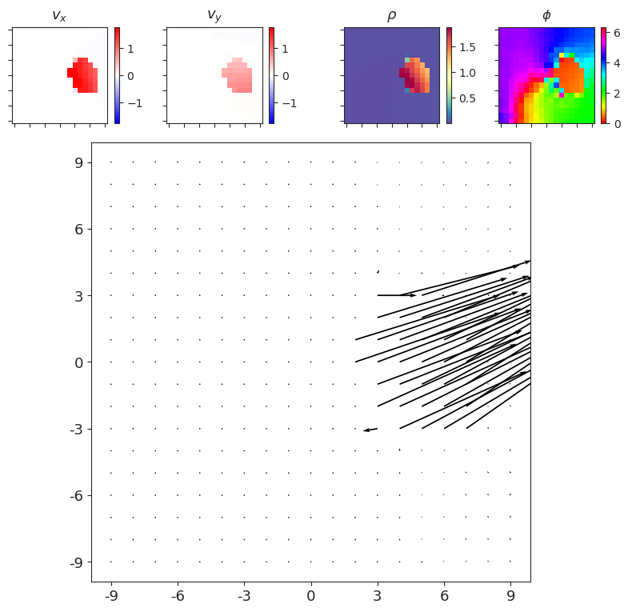
l1_bal.sum(), epe_bal.sum(), cos.sum()
(509.73825, 1637.9862, 3108.1858)
l2_true = vae.l2_recon(x, y)
l2_true = torch.sum(l2_true, dim=[1, 2, 3])
l2_true = l2_true * w / w.mean()
l2_true = to_np(l2_true)
l2_true.sum()
213.72304
np.argmax(l2_true)
54
show_opticflow_full(y[54])
show_opticflow_full(x[54]);
np.argsort(epe_bal)[:5]
array([225, 191, 222, 30, 272])
epe_bal[225], epe[225]
(1.0957534, tensor(2.8871, device='cuda:0'))
show_opticflow_full(y[225])
show_opticflow_full(x[225]);
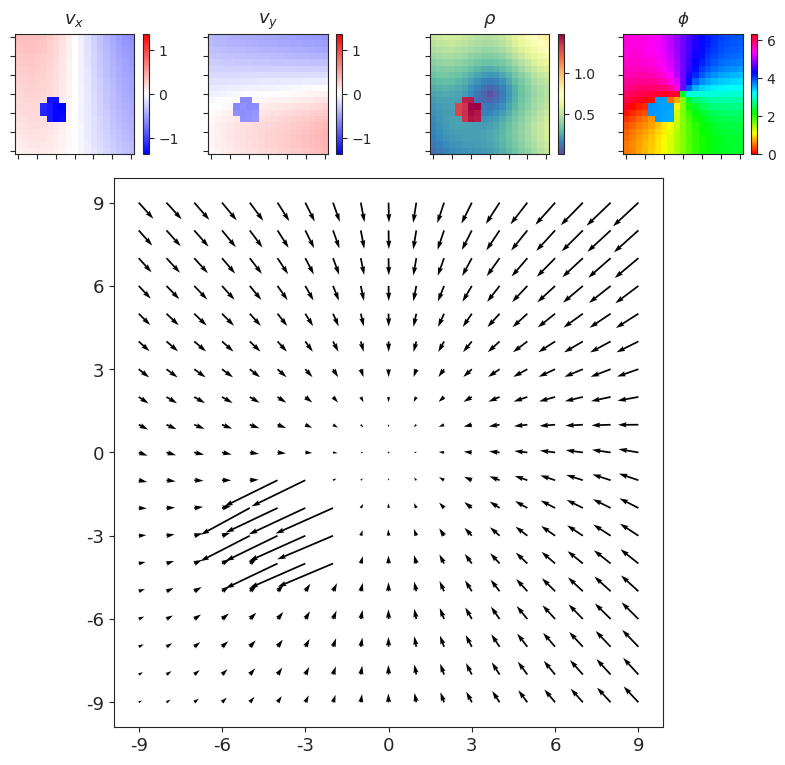

np.argsort(epe_bal)[-1]
417
show_opticflow_full(y[417])
show_opticflow_full(x[417]);
torch.linalg.norm(vae.expand[3].weight)
tensor(0., device='cuda:0', grad_fn=<LinalgVectorNormBackward0>)
w2p = {}
norms_expand = {}
for i, layer in enumerate(vae.expand):
w2p[i] = to_np(layer.weight)
_norm = to_np(torch.linalg.norm(layer.weight, dim=1).sum())
norms_expand[i] = _norm
print({i: np.round(v, 3) for i, v in norms_expand.items()})
{ 0: 0.0, 1: 0.0, 2: 0.0, 3: 0.0, 4: 0.0, 5: 2.991, 6: 2.633, 7: 2.454, 8: 0.076, 9: 0.218, 10: 0.27, 11: 11.529, 12: 5.169, 13: 4.488, 14: 4.657, 15: 8.618, 16: 12.263, 17: 9.225, 18: 10.463, 19: 15.844, 20: 39.484, 21: 24.393, 22: 22.504, 23: 34.079, 24: 25.439, 25: 1.808, 26: 21.293, 27: 17.608, 28: 20.081, 29: 25.538, 30: 40.797, 31: 31.859, 32: 24.752, 33: 32.504, 34: 29.904, 35: 54.777, 36: 32.537, 37: 46.87, 38: 28.224, 39: 27.703 }
scales, _ = tr.model.latent_scales()
num = vae.cfg.n_latent_per_group
for i, _w in w2p.items():
fig, axes = create_figure(num, num, (6, 6), 'all', 'all', tight_layout=True)
for z, k in itertools.product(range(num), range(num)):
ax = axes[z, k]
im = ax.imshow(_w[z, k])
plt.colorbar(im, ax=ax)
if z == 0:
ax.set_title(f"k = {k}", fontsize=13)
if k == 0:
ax.set_ylabel(f"z = {z}", fontsize=13)
fig.suptitle(f'Expand_{i} (scale = {scales[i]})', fontsize=15, y=1.02)
plt.show()
scales, _ = tr.model.latent_scales()
num = vae.cfg.n_latent_per_group
for i, _w in w2p.items():
fig, axes = create_figure(1, num, (9, 2), 'all', 'all', tight_layout=True)
for z in range(num):
ax = axes[z]
im = ax.imshow(_w[z, 0])
plt.colorbar(im, ax=ax)
ax.set_title(f"z = {z}", fontsize=13)
fig.suptitle(f'Expand_{i} (scale = {scales[i]})', fontsize=15, y=1.02)
plt.show()
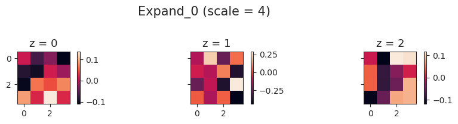
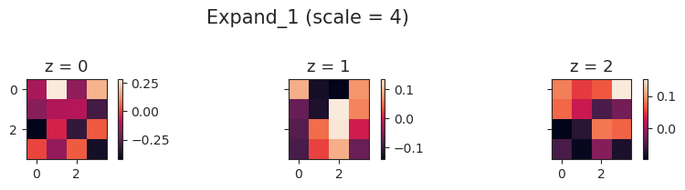
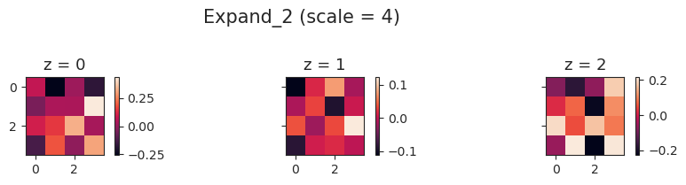
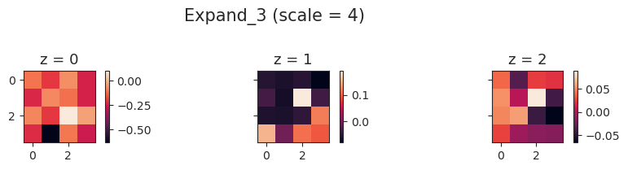
 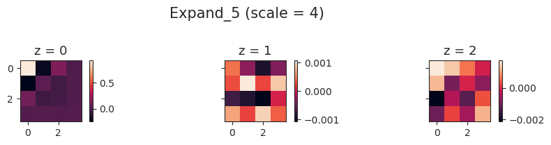
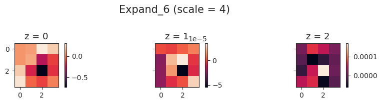
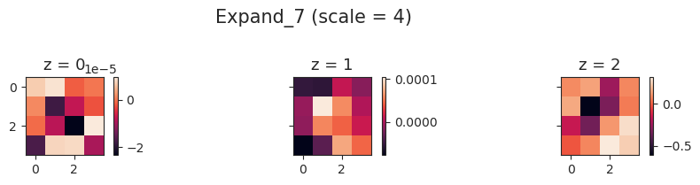
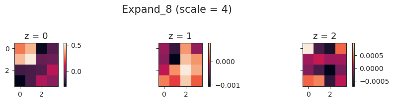
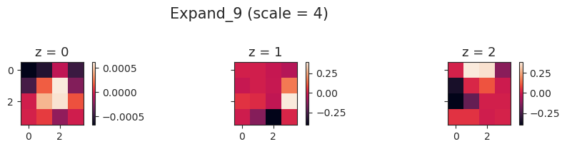
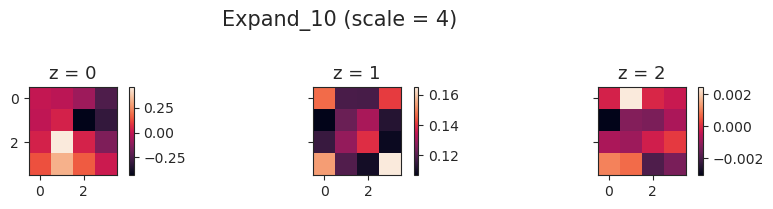
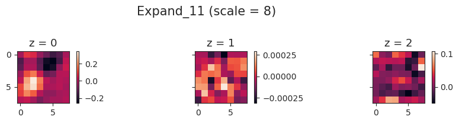
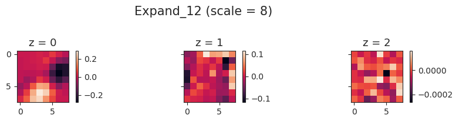
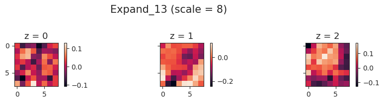
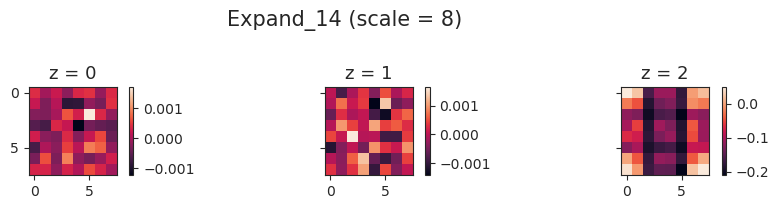
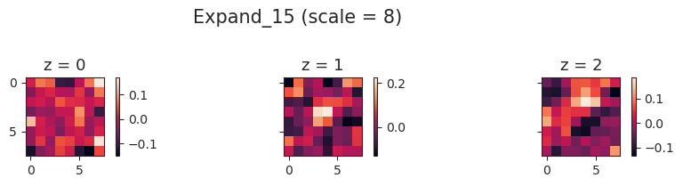
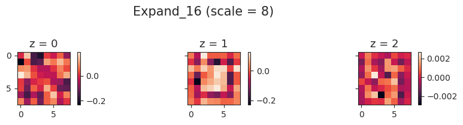
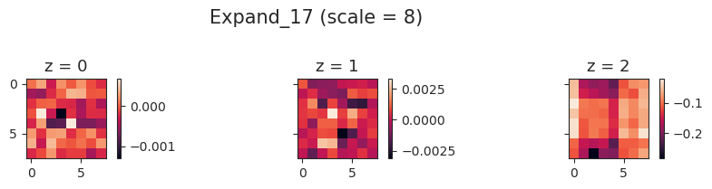
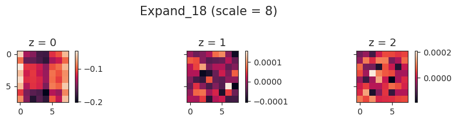
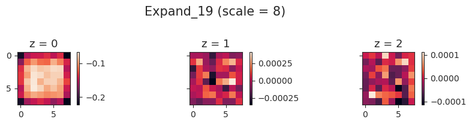
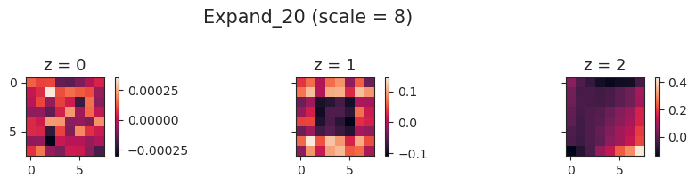
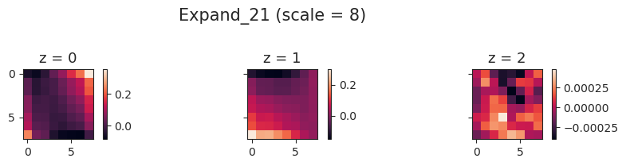
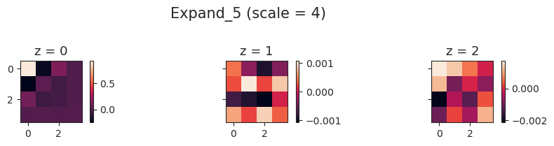
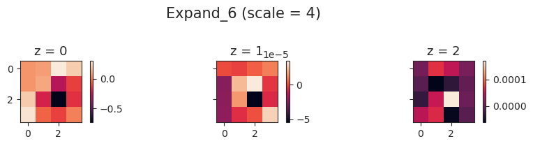
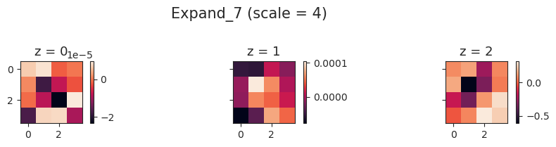
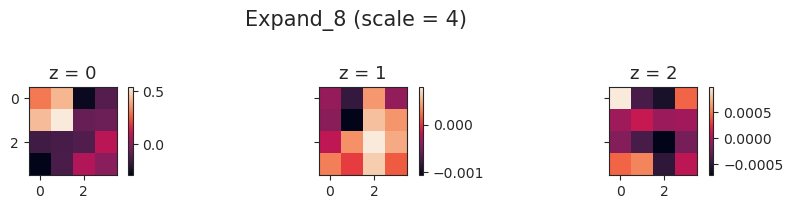
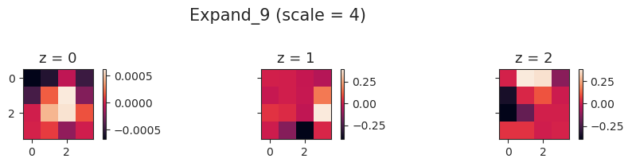
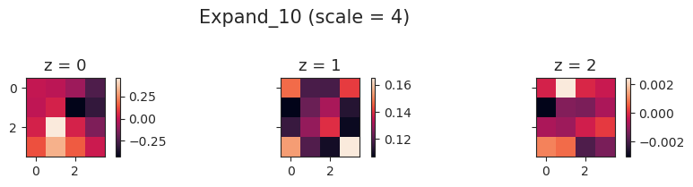
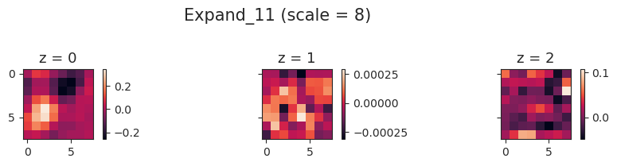
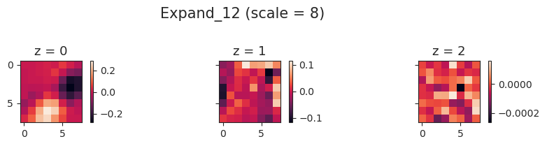
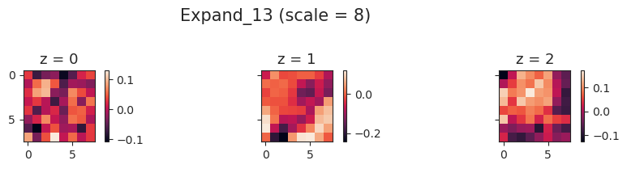
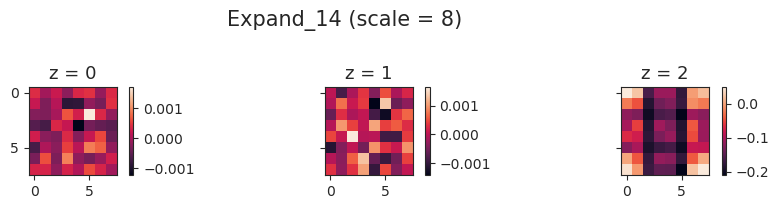
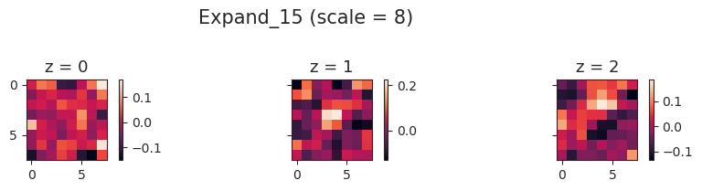
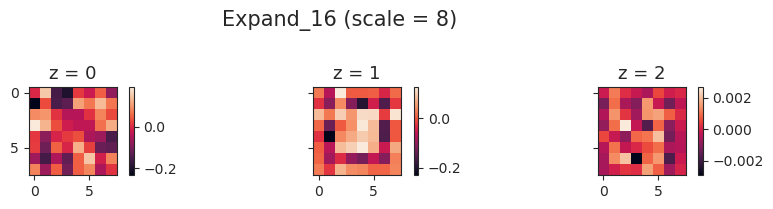
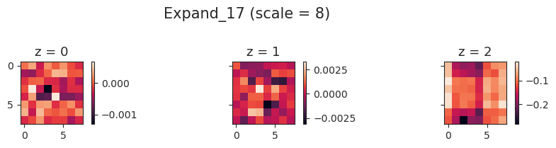
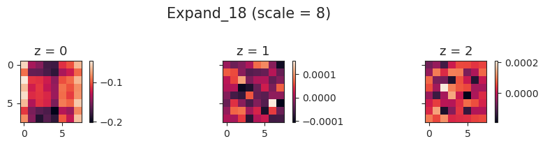
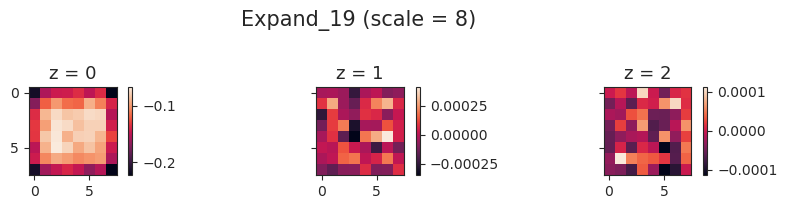
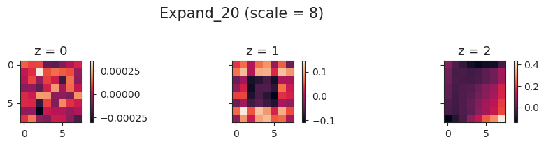
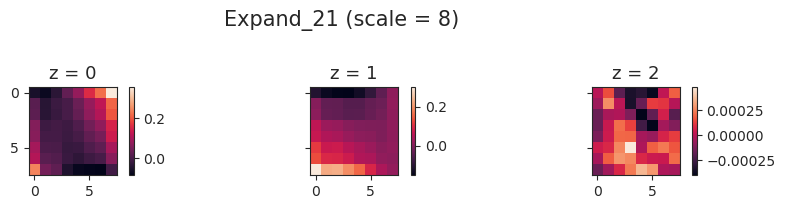
 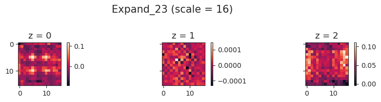
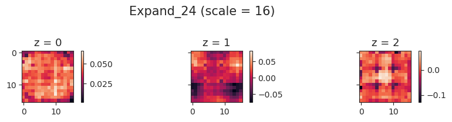


val['regr/mi'].shape
(11, 140)
_ = show_heatmap(val['regr/mi'], vmin=0, vmax=None, cmap='rocket', figsize=(70, 5))

from sklearn.feature_selection import mutual_info_regression
z = val['z_vld'][:, 12]
g = val['g_vld']
fig, ax = create_figure(figsize=(10, 2))
ax.plot(mutual_info_regression(g, z), marker='.')
ax.set_xticks(range(11))
ax.grid()

v_slf = g[:, 2:5]
v_slf = cart2polar(v_slf)
v_slf.shape
(7500, 3)
sns.histplot(v_slf[:, 0]);
fig, ax = create_figure(figsize=(4, 2))
ax.plot(mutual_info_regression(v_slf, z), marker='.')
ax.set_xticks(range(3))
ax.grid()
vae.cfg.n_latent_per_group
20
Best fit¶
val, loss = tr.validate(n_samples=4096)
{k: v.mean() for k, v in loss.items()}
{'kl': 78.1286, 'recon': 1.3715392, 'recon_balanced': 0.8656474}
for k, v in val.items():
if 'fig' in k:
print(k)
display(v)
fig/sample
fig/corr_z
fig/regression
fig/mutual_info
fig/hist_z
fig/hist_x_sample
print(vae)
VAE( (stem): ParametrizedConv2D( 2, 32, kernel_size=(4, 4), stride=(1, 1), padding=valid (parametrizations): ModuleDict( (weight): ParametrizationList( (0): _SpectralNorm() ) ) ) (pre): ModuleList() (enc_tower): ModuleList( (0): Cell( (skip): Identity() (ops): ModuleList( (0): ConvLayer( (act_fn): SiLU() (conv): ParametrizedConv2D( 32, 32, kernel_size=(3, 3), stride=(1, 1), padding=(1, 1) (parametrizations): ModuleDict( (weight): ParametrizationList( (0): _SpectralNorm() ) ) ) ) (1): ConvLayer( (act_fn): SiLU() (conv): ParametrizedConv2D( 32, 32, kernel_size=(3, 3), stride=(1, 1), padding=(1, 1) (parametrizations): ModuleDict( (weight): ParametrizationList( (0): _SpectralNorm() ) ) ) ) ) (se): SELayer( (pool): AdaptiveAvgPool2d(output_size=1) (fc): Sequential( (0): Linear(in_features=32, out_features=4, bias=True) (1): SiLU() (2): Linear(in_features=4, out_features=32, bias=True) (3): Sigmoid() ) ) ) (1): Cell( (skip): Identity() (ops): ModuleList( (0): ConvLayer( (act_fn): SiLU() (conv): ParametrizedConv2D( 32, 32, kernel_size=(3, 3), stride=(1, 1), padding=(1, 1) (parametrizations): ModuleDict( (weight): ParametrizationList( (0): _SpectralNorm() ) ) ) ) (1): ConvLayer( (act_fn): SiLU() (conv): ParametrizedConv2D( 32, 32, kernel_size=(3, 3), stride=(1, 1), padding=(1, 1) (parametrizations): ModuleDict( (weight): ParametrizationList( (0): _SpectralNorm() ) ) ) ) ) (se): SELayer( (pool): AdaptiveAvgPool2d(output_size=1) (fc): Sequential( (0): Linear(in_features=32, out_features=4, bias=True) (1): SiLU() (2): Linear(in_features=4, out_features=32, bias=True) (3): Sigmoid() ) ) ) (2): CombinerEnc( (conv): ParametrizedConv2D( 32, 32, kernel_size=(1, 1), stride=(1, 1) (parametrizations): ModuleDict( (weight): ParametrizationList( (0): _SpectralNorm() ) ) ) ) (3): Cell( (skip): Identity() (ops): ModuleList( (0): ConvLayer( (act_fn): SiLU() (conv): ParametrizedConv2D( 32, 32, kernel_size=(3, 3), stride=(1, 1), padding=(1, 1) (parametrizations): ModuleDict( (weight): ParametrizationList( (0): _SpectralNorm() ) ) ) ) (1): ConvLayer( (act_fn): SiLU() (conv): ParametrizedConv2D( 32, 32, kernel_size=(3, 3), stride=(1, 1), padding=(1, 1) (parametrizations): ModuleDict( (weight): ParametrizationList( (0): _SpectralNorm() ) ) ) ) ) (se): SELayer( (pool): AdaptiveAvgPool2d(output_size=1) (fc): Sequential( (0): Linear(in_features=32, out_features=4, bias=True) (1): SiLU() (2): Linear(in_features=4, out_features=32, bias=True) (3): Sigmoid() ) ) ) (4): Cell( (skip): Identity() (ops): ModuleList( (0): ConvLayer( (act_fn): SiLU() (conv): ParametrizedConv2D( 32, 32, kernel_size=(3, 3), stride=(1, 1), padding=(1, 1) (parametrizations): ModuleDict( (weight): ParametrizationList( (0): _SpectralNorm() ) ) ) ) (1): ConvLayer( (act_fn): SiLU() (conv): ParametrizedConv2D( 32, 32, kernel_size=(3, 3), stride=(1, 1), padding=(1, 1) (parametrizations): ModuleDict( (weight): ParametrizationList( (0): _SpectralNorm() ) ) ) ) ) (se): SELayer( (pool): AdaptiveAvgPool2d(output_size=1) (fc): Sequential( (0): Linear(in_features=32, out_features=4, bias=True) (1): SiLU() (2): Linear(in_features=4, out_features=32, bias=True) (3): Sigmoid() ) ) ) (5): CombinerEnc( (conv): ParametrizedConv2D( 32, 32, kernel_size=(1, 1), stride=(1, 1) (parametrizations): ModuleDict( (weight): ParametrizationList( (0): _SpectralNorm() ) ) ) ) (6): Cell( (skip): Identity() (ops): ModuleList( (0): ConvLayer( (act_fn): SiLU() (conv): ParametrizedConv2D( 32, 32, kernel_size=(3, 3), stride=(1, 1), padding=(1, 1) (parametrizations): ModuleDict( (weight): ParametrizationList( (0): _SpectralNorm() ) ) ) ) (1): ConvLayer( (act_fn): SiLU() (conv): ParametrizedConv2D( 32, 32, kernel_size=(3, 3), stride=(1, 1), padding=(1, 1) (parametrizations): ModuleDict( (weight): ParametrizationList( (0): _SpectralNorm() ) ) ) ) ) (se): SELayer( (pool): AdaptiveAvgPool2d(output_size=1) (fc): Sequential( (0): Linear(in_features=32, out_features=4, bias=True) (1): SiLU() (2): Linear(in_features=4, out_features=32, bias=True) (3): Sigmoid() ) ) ) (7): Cell( (skip): Identity() (ops): ModuleList( (0): ConvLayer( (act_fn): SiLU() (conv): ParametrizedConv2D( 32, 32, kernel_size=(3, 3), stride=(1, 1), padding=(1, 1) (parametrizations): ModuleDict( (weight): ParametrizationList( (0): _SpectralNorm() ) ) ) ) (1): ConvLayer( (act_fn): SiLU() (conv): ParametrizedConv2D( 32, 32, kernel_size=(3, 3), stride=(1, 1), padding=(1, 1) (parametrizations): ModuleDict( (weight): ParametrizationList( (0): _SpectralNorm() ) ) ) ) ) (se): SELayer( (pool): AdaptiveAvgPool2d(output_size=1) (fc): Sequential( (0): Linear(in_features=32, out_features=4, bias=True) (1): SiLU() (2): Linear(in_features=4, out_features=32, bias=True) (3): Sigmoid() ) ) ) (8): CombinerEnc( (conv): ParametrizedConv2D( 32, 32, kernel_size=(1, 1), stride=(1, 1) (parametrizations): ModuleDict( (weight): ParametrizationList( (0): _SpectralNorm() ) ) ) ) (9): Cell( (skip): Identity() (ops): ModuleList( (0): ConvLayer( (act_fn): SiLU() (conv): ParametrizedConv2D( 32, 32, kernel_size=(3, 3), stride=(1, 1), padding=(1, 1) (parametrizations): ModuleDict( (weight): ParametrizationList( (0): _SpectralNorm() ) ) ) ) (1): ConvLayer( (act_fn): SiLU() (conv): ParametrizedConv2D( 32, 32, kernel_size=(3, 3), stride=(1, 1), padding=(1, 1) (parametrizations): ModuleDict( (weight): ParametrizationList( (0): _SpectralNorm() ) ) ) ) ) (se): SELayer( (pool): AdaptiveAvgPool2d(output_size=1) (fc): Sequential( (0): Linear(in_features=32, out_features=4, bias=True) (1): SiLU() (2): Linear(in_features=4, out_features=32, bias=True) (3): Sigmoid() ) ) ) (10): Cell( (skip): Identity() (ops): ModuleList( (0): ConvLayer( (act_fn): SiLU() (conv): ParametrizedConv2D( 32, 32, kernel_size=(3, 3), stride=(1, 1), padding=(1, 1) (parametrizations): ModuleDict( (weight): ParametrizationList( (0): _SpectralNorm() ) ) ) ) (1): ConvLayer( (act_fn): SiLU() (conv): ParametrizedConv2D( 32, 32, kernel_size=(3, 3), stride=(1, 1), padding=(1, 1) (parametrizations): ModuleDict( (weight): ParametrizationList( (0): _SpectralNorm() ) ) ) ) ) (se): SELayer( (pool): AdaptiveAvgPool2d(output_size=1) (fc): Sequential( (0): Linear(in_features=32, out_features=4, bias=True) (1): SiLU() (2): Linear(in_features=4, out_features=32, bias=True) (3): Sigmoid() ) ) ) (11): CombinerEnc( (conv): ParametrizedConv2D( 32, 32, kernel_size=(1, 1), stride=(1, 1) (parametrizations): ModuleDict( (weight): ParametrizationList( (0): _SpectralNorm() ) ) ) ) (12): Cell( (skip): FactorizedReduce( (swish): SiLU(inplace=True) (ops): ModuleList( (0): ParametrizedConv2D( 32, 16, kernel_size=(1, 1), stride=(2, 2) (parametrizations): ModuleDict( (weight): ParametrizationList( (0): _SpectralNorm() ) ) ) (1): ParametrizedConv2D( 32, 16, kernel_size=(1, 1), stride=(2, 2) (parametrizations): ModuleDict( (weight): ParametrizationList( (0): _SpectralNorm() ) ) ) (2): ParametrizedConv2D( 32, 16, kernel_size=(1, 1), stride=(2, 2) (parametrizations): ModuleDict( (weight): ParametrizationList( (0): _SpectralNorm() ) ) ) (3): ParametrizedConv2D( 32, 16, kernel_size=(1, 1), stride=(2, 2) (parametrizations): ModuleDict( (weight): ParametrizationList( (0): _SpectralNorm() ) ) ) ) ) (ops): ModuleList( (0): ConvLayer( (act_fn): SiLU() (conv): ParametrizedConv2D( 32, 64, kernel_size=(3, 3), stride=(2, 2), padding=(1, 1) (parametrizations): ModuleDict( (weight): ParametrizationList( (0): _SpectralNorm() ) ) ) ) (1): ConvLayer( (act_fn): SiLU() (conv): ParametrizedConv2D( 64, 64, kernel_size=(3, 3), stride=(1, 1), padding=(1, 1) (parametrizations): ModuleDict( (weight): ParametrizationList( (0): _SpectralNorm() ) ) ) ) ) (se): SELayer( (pool): AdaptiveAvgPool2d(output_size=1) (fc): Sequential( (0): Linear(in_features=64, out_features=4, bias=True) (1): SiLU() (2): Linear(in_features=4, out_features=64, bias=True) (3): Sigmoid() ) ) ) (13): Cell( (skip): Identity() (ops): ModuleList( (0): ConvLayer( (act_fn): SiLU() (conv): ParametrizedConv2D( 64, 64, kernel_size=(3, 3), stride=(1, 1), padding=(1, 1) (parametrizations): ModuleDict( (weight): ParametrizationList( (0): _SpectralNorm() ) ) ) ) (1): ConvLayer( (act_fn): SiLU() (conv): ParametrizedConv2D( 64, 64, kernel_size=(3, 3), stride=(1, 1), padding=(1, 1) (parametrizations): ModuleDict( (weight): ParametrizationList( (0): _SpectralNorm() ) ) ) ) ) (se): SELayer( (pool): AdaptiveAvgPool2d(output_size=1) (fc): Sequential( (0): Linear(in_features=64, out_features=4, bias=True) (1): SiLU() (2): Linear(in_features=4, out_features=64, bias=True) (3): Sigmoid() ) ) ) (14): Cell( (skip): Identity() (ops): ModuleList( (0): ConvLayer( (act_fn): SiLU() (conv): ParametrizedConv2D( 64, 64, kernel_size=(3, 3), stride=(1, 1), padding=(1, 1) (parametrizations): ModuleDict( (weight): ParametrizationList( (0): _SpectralNorm() ) ) ) ) (1): ConvLayer( (act_fn): SiLU() (conv): ParametrizedConv2D( 64, 64, kernel_size=(3, 3), stride=(1, 1), padding=(1, 1) (parametrizations): ModuleDict( (weight): ParametrizationList( (0): _SpectralNorm() ) ) ) ) ) (se): SELayer( (pool): AdaptiveAvgPool2d(output_size=1) (fc): Sequential( (0): Linear(in_features=64, out_features=4, bias=True) (1): SiLU() (2): Linear(in_features=4, out_features=64, bias=True) (3): Sigmoid() ) ) ) (15): CombinerEnc( (conv): ParametrizedConv2D( 64, 64, kernel_size=(1, 1), stride=(1, 1) (parametrizations): ModuleDict( (weight): ParametrizationList( (0): _SpectralNorm() ) ) ) ) (16): Cell( (skip): Identity() (ops): ModuleList( (0): ConvLayer( (act_fn): SiLU() (conv): ParametrizedConv2D( 64, 64, kernel_size=(3, 3), stride=(1, 1), padding=(1, 1) (parametrizations): ModuleDict( (weight): ParametrizationList( (0): _SpectralNorm() ) ) ) ) (1): ConvLayer( (act_fn): SiLU() (conv): ParametrizedConv2D( 64, 64, kernel_size=(3, 3), stride=(1, 1), padding=(1, 1) (parametrizations): ModuleDict( (weight): ParametrizationList( (0): _SpectralNorm() ) ) ) ) ) (se): SELayer( (pool): AdaptiveAvgPool2d(output_size=1) (fc): Sequential( (0): Linear(in_features=64, out_features=4, bias=True) (1): SiLU() (2): Linear(in_features=4, out_features=64, bias=True) (3): Sigmoid() ) ) ) (17): Cell( (skip): Identity() (ops): ModuleList( (0): ConvLayer( (act_fn): SiLU() (conv): ParametrizedConv2D( 64, 64, kernel_size=(3, 3), stride=(1, 1), padding=(1, 1) (parametrizations): ModuleDict( (weight): ParametrizationList( (0): _SpectralNorm() ) ) ) ) (1): ConvLayer( (act_fn): SiLU() (conv): ParametrizedConv2D( 64, 64, kernel_size=(3, 3), stride=(1, 1), padding=(1, 1) (parametrizations): ModuleDict( (weight): ParametrizationList( (0): _SpectralNorm() ) ) ) ) ) (se): SELayer( (pool): AdaptiveAvgPool2d(output_size=1) (fc): Sequential( (0): Linear(in_features=64, out_features=4, bias=True) (1): SiLU() (2): Linear(in_features=4, out_features=64, bias=True) (3): Sigmoid() ) ) ) (18): CombinerEnc( (conv): ParametrizedConv2D( 64, 64, kernel_size=(1, 1), stride=(1, 1) (parametrizations): ModuleDict( (weight): ParametrizationList( (0): _SpectralNorm() ) ) ) ) (19): Cell( (skip): FactorizedReduce( (swish): SiLU(inplace=True) (ops): ModuleList( (0): ParametrizedConv2D( 64, 32, kernel_size=(1, 1), stride=(2, 2) (parametrizations): ModuleDict( (weight): ParametrizationList( (0): _SpectralNorm() ) ) ) (1): ParametrizedConv2D( 64, 32, kernel_size=(1, 1), stride=(2, 2) (parametrizations): ModuleDict( (weight): ParametrizationList( (0): _SpectralNorm() ) ) ) (2): ParametrizedConv2D( 64, 32, kernel_size=(1, 1), stride=(2, 2) (parametrizations): ModuleDict( (weight): ParametrizationList( (0): _SpectralNorm() ) ) ) (3): ParametrizedConv2D( 64, 32, kernel_size=(1, 1), stride=(2, 2) (parametrizations): ModuleDict( (weight): ParametrizationList( (0): _SpectralNorm() ) ) ) ) ) (ops): ModuleList( (0): ConvLayer( (act_fn): SiLU() (conv): ParametrizedConv2D( 64, 128, kernel_size=(3, 3), stride=(2, 2), padding=(1, 1) (parametrizations): ModuleDict( (weight): ParametrizationList( (0): _SpectralNorm() ) ) ) ) (1): ConvLayer( (act_fn): SiLU() (conv): ParametrizedConv2D( 128, 128, kernel_size=(3, 3), stride=(1, 1), padding=(1, 1) (parametrizations): ModuleDict( (weight): ParametrizationList( (0): _SpectralNorm() ) ) ) ) ) (se): SELayer( (pool): AdaptiveAvgPool2d(output_size=1) (fc): Sequential( (0): Linear(in_features=128, out_features=8, bias=True) (1): SiLU() (2): Linear(in_features=8, out_features=128, bias=True) (3): Sigmoid() ) ) ) (20): Cell( (skip): Identity() (ops): ModuleList( (0): ConvLayer( (act_fn): SiLU() (conv): ParametrizedConv2D( 128, 128, kernel_size=(3, 3), stride=(1, 1), padding=(1, 1) (parametrizations): ModuleDict( (weight): ParametrizationList( (0): _SpectralNorm() ) ) ) ) (1): ConvLayer( (act_fn): SiLU() (conv): ParametrizedConv2D( 128, 128, kernel_size=(3, 3), stride=(1, 1), padding=(1, 1) (parametrizations): ModuleDict( (weight): ParametrizationList( (0): _SpectralNorm() ) ) ) ) ) (se): SELayer( (pool): AdaptiveAvgPool2d(output_size=1) (fc): Sequential( (0): Linear(in_features=128, out_features=8, bias=True) (1): SiLU() (2): Linear(in_features=8, out_features=128, bias=True) (3): Sigmoid() ) ) ) (21): Cell( (skip): Identity() (ops): ModuleList( (0): ConvLayer( (act_fn): SiLU() (conv): ParametrizedConv2D( 128, 128, kernel_size=(3, 3), stride=(1, 1), padding=(1, 1) (parametrizations): ModuleDict( (weight): ParametrizationList( (0): _SpectralNorm() ) ) ) ) (1): ConvLayer( (act_fn): SiLU() (conv): ParametrizedConv2D( 128, 128, kernel_size=(3, 3), stride=(1, 1), padding=(1, 1) (parametrizations): ModuleDict( (weight): ParametrizationList( (0): _SpectralNorm() ) ) ) ) ) (se): SELayer( (pool): AdaptiveAvgPool2d(output_size=1) (fc): Sequential( (0): Linear(in_features=128, out_features=8, bias=True) (1): SiLU() (2): Linear(in_features=8, out_features=128, bias=True) (3): Sigmoid() ) ) ) ) (enc_sampler): ModuleList( (0): ParametrizedConv2d( 128, 8, kernel_size=(4, 4), stride=(1, 1) (parametrizations): ModuleDict( (weight): ParametrizationList( (0): _SpectralNorm() ) ) ) (1): ParametrizedConv2d( 64, 8, kernel_size=(8, 8), stride=(1, 1) (parametrizations): ModuleDict( (weight): ParametrizationList( (0): _SpectralNorm() ) ) ) (2): ParametrizedConv2d( 64, 8, kernel_size=(8, 8), stride=(1, 1) (parametrizations): ModuleDict( (weight): ParametrizationList( (0): _SpectralNorm() ) ) ) (3): ParametrizedConv2d( 32, 8, kernel_size=(16, 16), stride=(1, 1) (parametrizations): ModuleDict( (weight): ParametrizationList( (0): _SpectralNorm() ) ) ) (4): ParametrizedConv2d( 32, 8, kernel_size=(16, 16), stride=(1, 1) (parametrizations): ModuleDict( (weight): ParametrizationList( (0): _SpectralNorm() ) ) ) (5): ParametrizedConv2d( 32, 8, kernel_size=(16, 16), stride=(1, 1) (parametrizations): ModuleDict( (weight): ParametrizationList( (0): _SpectralNorm() ) ) ) (6): ParametrizedConv2d( 32, 8, kernel_size=(16, 16), stride=(1, 1) (parametrizations): ModuleDict( (weight): ParametrizationList( (0): _SpectralNorm() ) ) ) ) (dec_sampler): ModuleList( (0): Sequential( (0): ELU(alpha=1.0, inplace=True) (1): ParametrizedConv2d( 64, 8, kernel_size=(8, 8), stride=(1, 1) (parametrizations): ModuleDict( (weight): ParametrizationList( (0): _SpectralNorm() ) ) ) ) (1): Sequential( (0): ELU(alpha=1.0, inplace=True) (1): ParametrizedConv2d( 64, 8, kernel_size=(8, 8), stride=(1, 1) (parametrizations): ModuleDict( (weight): ParametrizationList( (0): _SpectralNorm() ) ) ) ) (2): Sequential( (0): ELU(alpha=1.0, inplace=True) (1): ParametrizedConv2d( 32, 8, kernel_size=(16, 16), stride=(1, 1) (parametrizations): ModuleDict( (weight): ParametrizationList( (0): _SpectralNorm() ) ) ) ) (3): Sequential( (0): ELU(alpha=1.0, inplace=True) (1): ParametrizedConv2d( 32, 8, kernel_size=(16, 16), stride=(1, 1) (parametrizations): ModuleDict( (weight): ParametrizationList( (0): _SpectralNorm() ) ) ) ) (4): Sequential( (0): ELU(alpha=1.0, inplace=True) (1): ParametrizedConv2d( 32, 8, kernel_size=(16, 16), stride=(1, 1) (parametrizations): ModuleDict( (weight): ParametrizationList( (0): _SpectralNorm() ) ) ) ) (5): Sequential( (0): ELU(alpha=1.0, inplace=True) (1): ParametrizedConv2d( 32, 8, kernel_size=(16, 16), stride=(1, 1) (parametrizations): ModuleDict( (weight): ParametrizationList( (0): _SpectralNorm() ) ) ) ) ) (expand): ModuleList( (0): ParametrizedConvTranspose2d( 4, 4, kernel_size=(4, 4), stride=(1, 1) (parametrizations): ModuleDict( (weight): ParametrizationList( (0): _SpectralNorm() ) ) ) (1): ParametrizedConvTranspose2d( 4, 4, kernel_size=(8, 8), stride=(1, 1) (parametrizations): ModuleDict( (weight): ParametrizationList( (0): _SpectralNorm() ) ) ) (2): ParametrizedConvTranspose2d( 4, 4, kernel_size=(8, 8), stride=(1, 1) (parametrizations): ModuleDict( (weight): ParametrizationList( (0): _SpectralNorm() ) ) ) (3): ParametrizedConvTranspose2d( 4, 4, kernel_size=(16, 16), stride=(1, 1) (parametrizations): ModuleDict( (weight): ParametrizationList( (0): _SpectralNorm() ) ) ) (4): ParametrizedConvTranspose2d( 4, 4, kernel_size=(16, 16), stride=(1, 1) (parametrizations): ModuleDict( (weight): ParametrizationList( (0): _SpectralNorm() ) ) ) (5): ParametrizedConvTranspose2d( 4, 4, kernel_size=(16, 16), stride=(1, 1) (parametrizations): ModuleDict( (weight): ParametrizationList( (0): _SpectralNorm() ) ) ) (6): ParametrizedConvTranspose2d( 4, 4, kernel_size=(16, 16), stride=(1, 1) (parametrizations): ModuleDict( (weight): ParametrizationList( (0): _SpectralNorm() ) ) ) ) (dec_tower): ModuleList( (0): CombinerDec( (conv): ParametrizedConv2D( 132, 128, kernel_size=(1, 1), stride=(1, 1) (parametrizations): ModuleDict( (weight): ParametrizationList( (0): _SpectralNorm() ) ) ) ) (1): Cell( (skip): Sequential( (0): Upsample(scale_factor=2.0, mode=bilinear) (1): ParametrizedConv2D( 128, 64, kernel_size=(1, 1), stride=(1, 1) (parametrizations): ModuleDict( (weight): ParametrizationList( (0): _SpectralNorm() ) ) ) ) (ops): ModuleList( (0): ConvLayer( (upsample): Upsample(scale_factor=2.0, mode=bilinear) (act_fn): SiLU() (conv): ParametrizedConv2D( 128, 64, kernel_size=(3, 3), stride=(1, 1), padding=(1, 1) (parametrizations): ModuleDict( (weight): ParametrizationList( (0): _SpectralNorm() ) ) ) ) ) (se): SELayer( (pool): AdaptiveAvgPool2d(output_size=1) (fc): Sequential( (0): Linear(in_features=64, out_features=4, bias=True) (1): SiLU() (2): Linear(in_features=4, out_features=64, bias=True) (3): Sigmoid() ) ) ) (2): Cell( (skip): Identity() (ops): ModuleList( (0): ConvLayer( (act_fn): SiLU() (conv): ParametrizedConv2D( 64, 64, kernel_size=(3, 3), stride=(1, 1), padding=(1, 1) (parametrizations): ModuleDict( (weight): ParametrizationList( (0): _SpectralNorm() ) ) ) ) ) (se): SELayer( (pool): AdaptiveAvgPool2d(output_size=1) (fc): Sequential( (0): Linear(in_features=64, out_features=4, bias=True) (1): SiLU() (2): Linear(in_features=4, out_features=64, bias=True) (3): Sigmoid() ) ) ) (3): Cell( (skip): Identity() (ops): ModuleList( (0): ConvLayer( (act_fn): SiLU() (conv): ParametrizedConv2D( 64, 64, kernel_size=(3, 3), stride=(1, 1), padding=(1, 1) (parametrizations): ModuleDict( (weight): ParametrizationList( (0): _SpectralNorm() ) ) ) ) ) (se): SELayer( (pool): AdaptiveAvgPool2d(output_size=1) (fc): Sequential( (0): Linear(in_features=64, out_features=4, bias=True) (1): SiLU() (2): Linear(in_features=4, out_features=64, bias=True) (3): Sigmoid() ) ) ) (4): CombinerDec( (conv): ParametrizedConv2D( 68, 64, kernel_size=(1, 1), stride=(1, 1) (parametrizations): ModuleDict( (weight): ParametrizationList( (0): _SpectralNorm() ) ) ) ) (5): Cell( (skip): Identity() (ops): ModuleList( (0): ConvLayer( (act_fn): SiLU() (conv): ParametrizedConv2D( 64, 64, kernel_size=(3, 3), stride=(1, 1), padding=(1, 1) (parametrizations): ModuleDict( (weight): ParametrizationList( (0): _SpectralNorm() ) ) ) ) ) (se): SELayer( (pool): AdaptiveAvgPool2d(output_size=1) (fc): Sequential( (0): Linear(in_features=64, out_features=4, bias=True) (1): SiLU() (2): Linear(in_features=4, out_features=64, bias=True) (3): Sigmoid() ) ) ) (6): Cell( (skip): Identity() (ops): ModuleList( (0): ConvLayer( (act_fn): SiLU() (conv): ParametrizedConv2D( 64, 64, kernel_size=(3, 3), stride=(1, 1), padding=(1, 1) (parametrizations): ModuleDict( (weight): ParametrizationList( (0): _SpectralNorm() ) ) ) ) ) (se): SELayer( (pool): AdaptiveAvgPool2d(output_size=1) (fc): Sequential( (0): Linear(in_features=64, out_features=4, bias=True) (1): SiLU() (2): Linear(in_features=4, out_features=64, bias=True) (3): Sigmoid() ) ) ) (7): CombinerDec( (conv): ParametrizedConv2D( 68, 64, kernel_size=(1, 1), stride=(1, 1) (parametrizations): ModuleDict( (weight): ParametrizationList( (0): _SpectralNorm() ) ) ) ) (8): Cell( (skip): Sequential( (0): Upsample(scale_factor=2.0, mode=bilinear) (1): ParametrizedConv2D( 64, 32, kernel_size=(1, 1), stride=(1, 1) (parametrizations): ModuleDict( (weight): ParametrizationList( (0): _SpectralNorm() ) ) ) ) (ops): ModuleList( (0): ConvLayer( (upsample): Upsample(scale_factor=2.0, mode=bilinear) (act_fn): SiLU() (conv): ParametrizedConv2D( 64, 32, kernel_size=(3, 3), stride=(1, 1), padding=(1, 1) (parametrizations): ModuleDict( (weight): ParametrizationList( (0): _SpectralNorm() ) ) ) ) ) (se): SELayer( (pool): AdaptiveAvgPool2d(output_size=1) (fc): Sequential( (0): Linear(in_features=32, out_features=4, bias=True) (1): SiLU() (2): Linear(in_features=4, out_features=32, bias=True) (3): Sigmoid() ) ) ) (9): Cell( (skip): Identity() (ops): ModuleList( (0): ConvLayer( (act_fn): SiLU() (conv): ParametrizedConv2D( 32, 32, kernel_size=(3, 3), stride=(1, 1), padding=(1, 1) (parametrizations): ModuleDict( (weight): ParametrizationList( (0): _SpectralNorm() ) ) ) ) ) (se): SELayer( (pool): AdaptiveAvgPool2d(output_size=1) (fc): Sequential( (0): Linear(in_features=32, out_features=4, bias=True) (1): SiLU() (2): Linear(in_features=4, out_features=32, bias=True) (3): Sigmoid() ) ) ) (10): Cell( (skip): Identity() (ops): ModuleList( (0): ConvLayer( (act_fn): SiLU() (conv): ParametrizedConv2D( 32, 32, kernel_size=(3, 3), stride=(1, 1), padding=(1, 1) (parametrizations): ModuleDict( (weight): ParametrizationList( (0): _SpectralNorm() ) ) ) ) ) (se): SELayer( (pool): AdaptiveAvgPool2d(output_size=1) (fc): Sequential( (0): Linear(in_features=32, out_features=4, bias=True) (1): SiLU() (2): Linear(in_features=4, out_features=32, bias=True) (3): Sigmoid() ) ) ) (11): CombinerDec( (conv): ParametrizedConv2D( 36, 32, kernel_size=(1, 1), stride=(1, 1) (parametrizations): ModuleDict( (weight): ParametrizationList( (0): _SpectralNorm() ) ) ) ) (12): Cell( (skip): Identity() (ops): ModuleList( (0): ConvLayer( (act_fn): SiLU() (conv): ParametrizedConv2D( 32, 32, kernel_size=(3, 3), stride=(1, 1), padding=(1, 1) (parametrizations): ModuleDict( (weight): ParametrizationList( (0): _SpectralNorm() ) ) ) ) ) (se): SELayer( (pool): AdaptiveAvgPool2d(output_size=1) (fc): Sequential( (0): Linear(in_features=32, out_features=4, bias=True) (1): SiLU() (2): Linear(in_features=4, out_features=32, bias=True) (3): Sigmoid() ) ) ) (13): Cell( (skip): Identity() (ops): ModuleList( (0): ConvLayer( (act_fn): SiLU() (conv): ParametrizedConv2D( 32, 32, kernel_size=(3, 3), stride=(1, 1), padding=(1, 1) (parametrizations): ModuleDict( (weight): ParametrizationList( (0): _SpectralNorm() ) ) ) ) ) (se): SELayer( (pool): AdaptiveAvgPool2d(output_size=1) (fc): Sequential( (0): Linear(in_features=32, out_features=4, bias=True) (1): SiLU() (2): Linear(in_features=4, out_features=32, bias=True) (3): Sigmoid() ) ) ) (14): CombinerDec( (conv): ParametrizedConv2D( 36, 32, kernel_size=(1, 1), stride=(1, 1) (parametrizations): ModuleDict( (weight): ParametrizationList( (0): _SpectralNorm() ) ) ) ) (15): Cell( (skip): Identity() (ops): ModuleList( (0): ConvLayer( (act_fn): SiLU() (conv): ParametrizedConv2D( 32, 32, kernel_size=(3, 3), stride=(1, 1), padding=(1, 1) (parametrizations): ModuleDict( (weight): ParametrizationList( (0): _SpectralNorm() ) ) ) ) ) (se): SELayer( (pool): AdaptiveAvgPool2d(output_size=1) (fc): Sequential( (0): Linear(in_features=32, out_features=4, bias=True) (1): SiLU() (2): Linear(in_features=4, out_features=32, bias=True) (3): Sigmoid() ) ) ) (16): Cell( (skip): Identity() (ops): ModuleList( (0): ConvLayer( (act_fn): SiLU() (conv): ParametrizedConv2D( 32, 32, kernel_size=(3, 3), stride=(1, 1), padding=(1, 1) (parametrizations): ModuleDict( (weight): ParametrizationList( (0): _SpectralNorm() ) ) ) ) ) (se): SELayer( (pool): AdaptiveAvgPool2d(output_size=1) (fc): Sequential( (0): Linear(in_features=32, out_features=4, bias=True) (1): SiLU() (2): Linear(in_features=4, out_features=32, bias=True) (3): Sigmoid() ) ) ) (17): CombinerDec( (conv): ParametrizedConv2D( 36, 32, kernel_size=(1, 1), stride=(1, 1) (parametrizations): ModuleDict( (weight): ParametrizationList( (0): _SpectralNorm() ) ) ) ) (18): Cell( (skip): Identity() (ops): ModuleList( (0): ConvLayer( (act_fn): SiLU() (conv): ParametrizedConv2D( 32, 32, kernel_size=(3, 3), stride=(1, 1), padding=(1, 1) (parametrizations): ModuleDict( (weight): ParametrizationList( (0): _SpectralNorm() ) ) ) ) ) (se): SELayer( (pool): AdaptiveAvgPool2d(output_size=1) (fc): Sequential( (0): Linear(in_features=32, out_features=4, bias=True) (1): SiLU() (2): Linear(in_features=4, out_features=32, bias=True) (3): Sigmoid() ) ) ) (19): Cell( (skip): Identity() (ops): ModuleList( (0): ConvLayer( (act_fn): SiLU() (conv): ParametrizedConv2D( 32, 32, kernel_size=(3, 3), stride=(1, 1), padding=(1, 1) (parametrizations): ModuleDict( (weight): ParametrizationList( (0): _SpectralNorm() ) ) ) ) ) (se): SELayer( (pool): AdaptiveAvgPool2d(output_size=1) (fc): Sequential( (0): Linear(in_features=32, out_features=4, bias=True) (1): SiLU() (2): Linear(in_features=4, out_features=32, bias=True) (3): Sigmoid() ) ) ) (20): CombinerDec( (conv): ParametrizedConv2D( 36, 32, kernel_size=(1, 1), stride=(1, 1) (parametrizations): ModuleDict( (weight): ParametrizationList( (0): _SpectralNorm() ) ) ) ) ) (post): ModuleList( (0): Cell( (skip): Sequential( (0): Upsample(scale_factor=2.0, mode=bilinear) (1): ParametrizedConv2D( 32, 16, kernel_size=(1, 1), stride=(1, 1) (parametrizations): ModuleDict( (weight): ParametrizationList( (0): _SpectralNorm() ) ) ) ) (ops): ModuleList( (0): ConvLayer( (upsample): Upsample(scale_factor=2.0, mode=bilinear) (act_fn): SiLU() (conv): ParametrizedConv2D( 32, 16, kernel_size=(3, 3), stride=(1, 1), padding=(1, 1) (parametrizations): ModuleDict( (weight): ParametrizationList( (0): _SpectralNorm() ) ) ) ) ) (se): SELayer( (pool): AdaptiveAvgPool2d(output_size=1) (fc): Sequential( (0): Linear(in_features=16, out_features=4, bias=True) (1): SiLU() (2): Linear(in_features=4, out_features=16, bias=True) (3): Sigmoid() ) ) ) (1): Upsample(size=19, mode=bilinear) (2): Cell( (skip): Identity() (ops): ModuleList( (0): ConvLayer( (act_fn): SiLU() (conv): ParametrizedConv2D( 16, 16, kernel_size=(3, 3), stride=(1, 1), padding=(1, 1) (parametrizations): ModuleDict( (weight): ParametrizationList( (0): _SpectralNorm() ) ) ) ) ) (se): SELayer( (pool): AdaptiveAvgPool2d(output_size=1) (fc): Sequential( (0): Linear(in_features=16, out_features=4, bias=True) (1): SiLU() (2): Linear(in_features=4, out_features=16, bias=True) (3): Sigmoid() ) ) ) (3): Cell( (skip): Identity() (ops): ModuleList( (0): ConvLayer( (act_fn): SiLU() (conv): ParametrizedConv2D( 16, 16, kernel_size=(3, 3), stride=(1, 1), padding=(1, 1) (parametrizations): ModuleDict( (weight): ParametrizationList( (0): _SpectralNorm() ) ) ) ) ) (se): SELayer( (pool): AdaptiveAvgPool2d(output_size=1) (fc): Sequential( (0): Linear(in_features=16, out_features=4, bias=True) (1): SiLU() (2): Linear(in_features=4, out_features=16, bias=True) (3): Sigmoid() ) ) ) ) (out): Sequential( (0): ELU(alpha=1.0, inplace=True) (1): Conv2d(16, 2, kernel_size=(3, 3), stride=(1, 1), padding=(1, 1)) ) )
_ = show_opticflow(val['x_sample'])
_ = show_opticflow_full(val['x_sample'][1])
norm = sp_lin.norm(val['y_sample'], axis=-1).mean(-1).mean(-1)
sns.histplot(norm);
len(vae.all_conv_layers), len(vae.all_log_norm)
(94, 94)
collections.Counter([e.size()[0] for e in vae.all_log_norm]).most_common()
[(32, 47), (64, 24), (16, 8), (128, 8), (1, 7)]
(vae.stem.log_weight_norm.exp())
tensor([ 1.0003, 1.0001, 8.3582, 15.3836, 19.4694, 57.7580, 8.8898, 19.0314,
21.5733, 11.6605, 6.8867, 20.2430, 10.6810, 2.6063, 55.4804, 16.1139,
19.4010, 6.7875, 25.8128, 12.0472, 9.4975, 1.8904, 54.7517, 1.0000,
33.3273, 0.4598, 2.4408, 1.6600, 22.2970, 0.8003, 1.5557, 26.3590],
device='cuda:0', grad_fn=<ExpBackward0>)
to_np(torch.linalg.vector_norm(vae.stem.weight, dim=[1, 2, 3]))
array([0.09915974, 0.07353112, 0.34580144, 0.46537644, 0.34919724,
0.55790186, 0.3663197 , 0.30363467, 0.40527374, 0.23678696,
0.38394547, 0.48038718, 0.65771294, 0.24927707, 0.5576934 ,
0.30126494, 0.64648294, 0.24343646, 0.5646717 , 0.27227154,
0.39209002, 0.1871767 , 0.59206593, 0.10057449, 0.49123752,
0.10552985, 0.32531214, 0.23663972, 0.694065 , 0.08851026,
0.16330333, 0.49779817], dtype=float32)
w = to_np(vae.stem.weight)
w.shape
(32, 2, 4, 4)
_ = show_opticflow(w, 6, figsize=(13, 13), tick_spacing=1)
_ = show_opticflow_full(val['y_sample'][1311])
from figures.fighelper import *
scales = vae.latent_scales()
plot_latents_hist(val['z_sample'], scales);
i, zz = np.unravel_index(np.argmin(val['z_sample']), val['z_sample'].shape)
i, zz
(3550, 19)
sns.histplot(val['z_sample'][i]);
show_opticflow_full(val['y_sample'][i]);
i, zz = np.unravel_index(np.argmax(val['z_sample']), val['z_sample'].shape)
i, zz
(3468, 19)
sns.histplot(val['z_sample'][i]);
show_opticflow_full(val['y_sample'][i]);
all_norms = to_np(torch.cat(vae.all_log_norm).exp())
ax = sns.histplot(all_norms, bins=np.linspace(0, 2, 51));
np.max(all_norms)
434.6152
print(f"{np.round((all_norms > 5).sum() / len(all_norms) * 100, 1)} % of them are greated than 5")
9.7 % of them are greated than 5
w2p = {}
norms_expand = {}
for i, layer in enumerate(vae.expand):
w2p[i] = to_np(layer.weight)
_norm = to_np(torch.linalg.norm(layer.weight, dim=1).sum())
norms_expand[i] = _norm
print({i: np.round(v, 3) for i, v in norms_expand.items()})
{0: 2.947, 1: 9.796, 2: 11.091, 3: 18.583, 4: 18.187, 5: 18.965, 6: 26.504}
scales = tr.model.latent_scales()
for i, _w in w2p.items():
num = vae.cfg.n_latent_per_group
fig, axes = create_figure(1, num, (9, 1.7), 'all', 'all', tight_layout=True)
for z in range(num):
ax = axes.flat[z]
im = ax.imshow(_w[z, 0])
plt.colorbar(im, ax=ax)
ax.set_title(f'z = {z}', fontsize=13)
fig.suptitle(f'Expand_{i} (scale = {scales[i]})', fontsize=15, y=1.02)
plt.show()
ticks = [
i for i in range(len(s)) if
i % vae.cfg.n_latent_per_group == 0
]
ticklabels = [i + 1 for i in ticks]
---------------------------------------------------------------------------
NameError Traceback (most recent call last)
Cell In[24], line 2
1 ticks = [
----> 2 i for i in range(len(s)) if
3 i % vae.cfg.n_latent_per_group == 0
4 ]
5 ticklabels = [i + 1 for i in ticks]
NameError: name 's' is not defined
val['z'].shape
(7500, 28)
u, s, v = sp_lin.svd(val['z'], full_matrices=False, compute_uv=True)
s *= 100 / s.sum()
u.shape, s.shape, v.shape
((7500, 28), (28,), (28, 28))
fig, ax = create_figure(figsize=(8, 3))
ax.plot(s, marker='o')
ax.set(xticks=ticks, xticklabels=ticklabels)
ax.grid()
fig, ax = create_figure()
ax.plot(v[0], marker='.')
ax.axhline(0, color='r', ls='--')
ax.set(xticks=ticks, xticklabels=ticklabels)
ax.grid()
plt.show()
r = 1 - sp_dist.pdist(val['z'].T, 'correlation')
r = sp_dist.squareform(r)
fig, ax = create_figure(1, 1, (13, 10))
sns.heatmap(
r,
center=0,
cmap='bwr',
linewidths=0.005,
linecolor='silver',
square=True,
annot=True,
fmt='.1f',
annot_kws={'fontsize': 8},
ax=ax,
);
# create datasets
f = pjoin(vae.cfg.data_dir, vae.cfg.h_pre)
f = h5py.File(f, mode='r')
fix = np.array(f['vld']['fix'], dtype=float)
pos_obj = np.array(f['vld']['pos_obj'], dtype=float)
vel_obj = np.array(f['vld']['vel_obj'], dtype=float)
vel_slf = np.array(f['vld']['vel_slf'], dtype=float)
f.close()
pos = dc(pos_obj)
pos[0] -= fix[:, 0]
pos[1] -= fix[:, 1]
g = np_nans((len(fix), 11))
g[:, :2] = fix
g[:, 2:5] = vel_slf.T
g[:, 5:8] = vel_obj.T
g[:, 8:11] = pos.T
g.shape
(7500, 11)
corr = 1 - sp_dist.pdist(g.T, metric='correlation')
corr = sp_dist.squareform(corr)
corr.shape
(11, 11)
fig, ax = create_figure(1, 1, (7, 5))
sns.heatmap(
corr,
center=0,
cmap='bwr',
linewidths=0.005,
linecolor='silver',
square=True,
annot=True,
fmt='.1f',
annot_kws={'fontsize': 8},
ax=ax,
);
u_g, s_g, v_g = sp_lin.svd(g, full_matrices=False, compute_uv=True)
s_g *= 100 / s_g.sum()
u_g.shape, s_g.shape, v_g.shape
((7500, 11), (11,), (11, 11))
fig, ax = create_figure(figsize=(8, 3))
ax.plot(s, marker='o', label='latents')
ax.plot(s_g, marker='o', label='ground truth')
ax.set(xticks=ticks, xticklabels=ticklabels)
ax.legend()
ax.grid()
fig, ax = create_figure(figsize=(8, 3))
ax.plot(s, marker='o', label='latents')
ax.plot(s_g, marker='o', label='ground truth')
ax.set(xticks=ticks, xticklabels=ticklabels, yscale='log')
ax.legend()
ax.grid()
u_x, s_x, v_x = sp_lin.svd(
flatten_arr(val['x'], ndim_start=1, ndim_end=0),
full_matrices=False,
compute_uv=True,
)
s_x *= 100 / s_x.sum()
u_x.shape, s_x.shape, v_x.shape
((7500, 722), (722,), (722, 722))
fig, ax = create_figure()
ax.plot(s_x)
ax.set_yscale('log')
plt.plot(s_x[:28])
[<matplotlib.lines.Line2D at 0x7f62809e9fd0>]
a = v_x[:64].reshape((64, 2, 19, 19))
show_opticflow(a, 4);
show_opticflow(a, 3);
a = v_x[16].reshape((2, 19, 19))
show_opticflow_full(a);
fig, ax = create_figure(figsize=(8, 3))
ax.plot(s, marker='o', label='latents')
ax.plot(s_g, marker='o', label='ground truth')
ax.plot(s_x[:28], marker='o', label='raw spatial')
ax.set(xticks=ticks, xticklabels=ticklabels)
ax.legend()
ax.grid()
show_opticflow(val['y_sample'][2000:3000], 4);